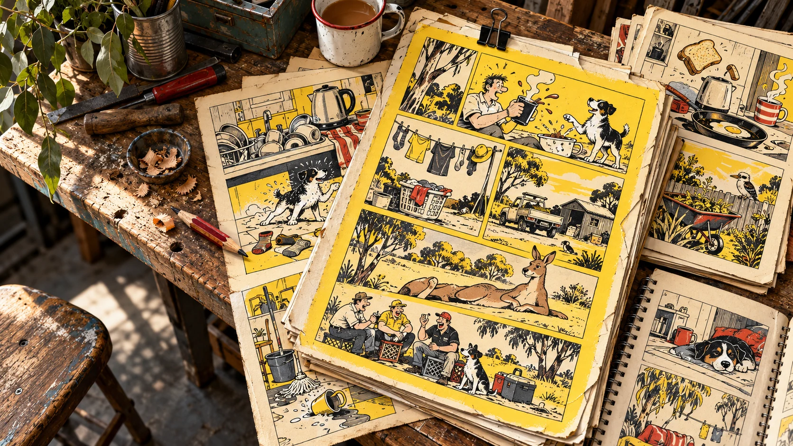
The original rough stuff
The starting material: big headlines, Australian comic humour, mine life, camp life and everyday rough edges.
The whole original pile. All 45 slides.
Daz’s supplied deck lives here in full: 42 original images and three text-only introduction slides. Search a topic, open a slide for readable wording and scene notes, or compare the exact original with its optimised web copy below.
Rummage through the originals
45 slides
01Series cover
Brand and introductions+
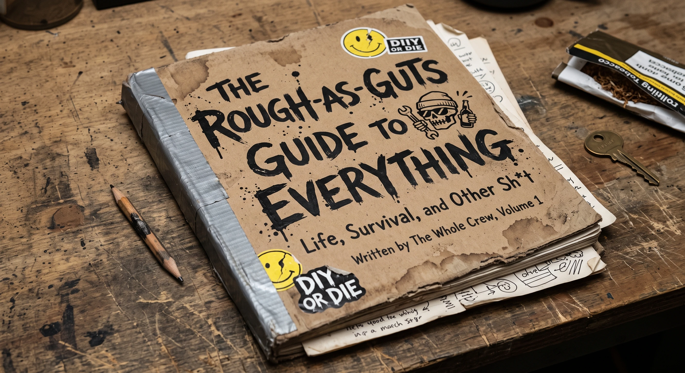

Optimised web copy shown. Exact original retained for provenance.
THE ROUGH-AS-GUTS GUIDE TO EVERYTHING
Life, Survival, and Other Sh*t
Book-cover mock-up
THE ROUGH-AS-GUTS GUIDE TO EVERYTHING
Life, Survival, and Other Sh*t
Written by The Whole Crew, Volume 1
DIY OR DIE
Scene: A battered brown cardboard-covered book lies diagonally on a deeply scratched, stained timber workbench. Its thick spine is repaired with silver duct tape. Loose handwritten papers protrude. Black brush lettering fills the cover. A beanie-wearing skull holds a spanner and a bottle. Cracked yellow smiley stickers and DIY OR DIE stickers decorate the cover. A pencil, keys and an open rolling-tobacco packet sit nearby in the full embedded image.
Separate editable slide captions
A parody of life’s biggest killers.
Pages of handy tips
Source defects and unclear lettering
- The cover image is cropped within slide 1. The scene description also inventories the full embedded asset, which includes surrounding workbench props outside the slide crop.
- The top small DIY sticker appears to contain an extra Y; surrounding paper scribbles are not reliably readable.
Image brief ingredients
Layout: cover
- Keep photorealistic workbench cover art distinct from the illustrated comic-poster style used later.
- Preserve worn materials, duct-tape binding, black hand-painted lettering and cracked yellow smileys as separate style ingredients.
- The editable captions belong to the presentation and are separate from the lettering on the book cover.
The JSON download contains the full source record and a separate draft image prompt for each scene.
02Introduction option: blunt reality check
Brand and introductions+
Option 1: The Blunt Reality Check
Option 1: The Blunt Reality Check
"This isn't a textbook, and it sure as hell isn't a philosophy degree. Life doesn't hand you a pristine 500-page manual printed on glossy paper. It throws you into the deep end with a roll of duct tape and tells you to figure it out. This book is that roll of duct tape. No fluff, no academic jargon, no high-minded theory. Just the raw, functional, rough-as-guts rules for navigating everything from fixing a leaky tap to surviving human interaction, without losing your sanity."
Scene: No illustration is present. The slide contains a bold option label followed by an introductory paragraph.
Image brief ingredients
Layout: intro
- Voice option: Blunt, profane, direct.
- Interpretive image seeds, not source artwork: Duct tape as a visual metaphor for improvised help. The deep end, a leaking tap and human interaction are examples in the prose, not illustrated scenes on the source slide.
- Treat slides 2-4 as alternative introductions rather than three sequential instructions.
The JSON download contains the full source record and a separate draft image prompt for each scene.
03Introduction option: conversational mentor
Brand and introductions+
Option 2: The Conversational Mentor
Option 2: The Conversational Mentor
"Look, most guides are written by experts who forgot what it's like to know absolutely nothing. They give you step 12 when you haven't even found the toolbox yet. The Rough-as-Guts Guide to Everything is built on a simple premise: if it works, it works. We’re stripping away the polish, skipping the filler, and getting straight to the dirt-under-the-fingernails basics of how things actually operate in the real world. Grab a drink, pull up a chair, and let's get into it."
Scene: No illustration is present. The slide contains a bold option label followed by an introductory paragraph.
Image brief ingredients
Layout: intro
- Voice option: Conversational, approachable, peer-to-peer.
- Interpretive image seeds, not source artwork: Finding the toolbox, dirt under fingernails, a drink and a chair are imagery suggested by the writing. The original slide contains text only.
- Treat slides 2-4 as alternative introductions rather than three sequential instructions.
The JSON download contains the full source record and a separate draft image prompt for each scene.
04Introduction option: manifesto
Brand and introductions+
Option 3: The Manifesto Call-to-Action
Option 3: The Manifesto Call-to-Action
"Perfection is a trap. If you wait until you have the perfect tools, the perfect plan, or the perfect understanding, you’ll spend your whole life standing on the sidelines. Welcome to the rough-as-guts approach to life: dirty solutions that actually work, survival skills for everyday chaos, and practical wisdom forged in trial and error. You don't need a diploma to master the universe. You just need enough grit to patch the holes as you go."
Scene: No illustration is present. The slide contains a bold option label followed by an introductory paragraph.
Image brief ingredients
Layout: intro
- Voice option: Defiant, impatient with perfection.
- Interpretive image seeds, not source artwork: Standing on the sidelines, patching holes and trial-and-error repairs are imagery suggested by the writing. The original slide contains text only.
- Treat slides 2-4 as alternative introductions rather than three sequential instructions.
The JSON download contains the full source record and a separate draft image prompt for each scene.
05Angle grinders
Tools and physical work+
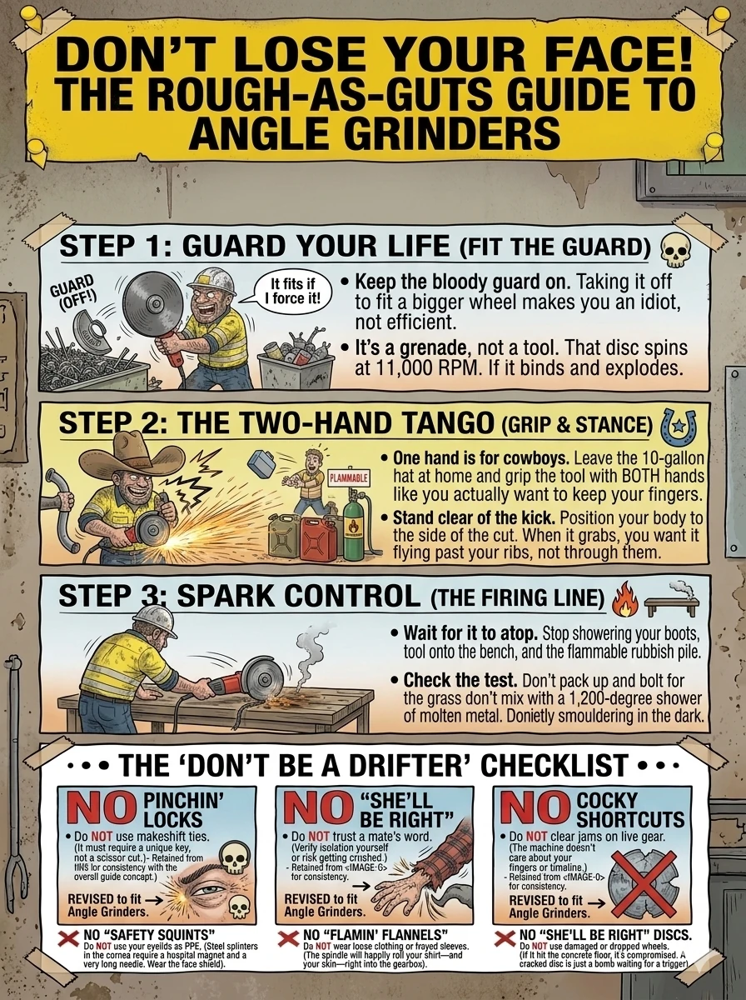

Optimised web copy shown. Exact original retained for provenance.
DON’T LOSE YOUR FACE! THE ROUGH-AS-GUTS GUIDE TO ANGLE GRINDERS
STEP 1 GUARD YOUR LIFE (FIT THE GUARD)
Keep the bloody guard on. Taking it off to fit a bigger wheel makes you an idiot, not efficient.
It’s a grenade, not a tool. That disc spins at 11,000 RPM. If it binds and explodes.
It fits if I force it!
In-image labels: GUARD (OFF!)
Scene: Grinning hard-hatted male worker in yellow hi-vis holds an angle grinder fitted with an oversized unguarded wheel. A smaller detached guard is labelled beside a bin of metal scrap; separate scrap bucket at right.
STEP 2 THE TWO-HAND TANGO (GRIP & STANCE)
One hand is for cowboys. Leave the 10-gallon hat at home and grip the tool with BOTH hands like you actually want to keep your fingers.
Stand clear of the kick. Position your body to the side of the cut. When it grabs, you want it flying past your ribs, not through them.
In-image labels: PLAMMABLE
Scene: Cowboy-hatted worker operates sparking angle grinder one-handed while holding a detached guard in the other hand. Sparks point toward red and green fuel cans and a green gas cylinder; a startled background worker recoils. Horseshoe icon beside heading.
STEP 3 SPARK CONTROL (THE FIRING LINE)
Wait for it to atop. Stop showering your boots, tool onto the bench, and the flammable rubbish pile.
Check the test. Don’t pack up and bolt for the grass don’t mix with a 1,200-degree shower of molten metal. Donietly smouldering in the dark.
Scene: Worker in hi-vis lays a corded grinder on a wooden bench. Wheel appears to keep spinning against the tabletop with small sparks; smoke curls upward. Flame and smoking bench icons.
THE ‘DON’T BE A DRIFTER’ CHECKLIST
NO PINCHIN’ LOCKS
Do NOT use makeshift ties.
(It must require a unique key, not a scissor cut.) - Retained from IIMS lor consistency with the oversll guide concept.)
REVISED to fit → Angle Grinders.
NO “SAFETY SQUINTS”
Do NOT use your eyelids as PPE, (Steel splinters in the cornea require a hospital magnet and a very long needle. Wear the face shield).
Scene: Close-up of squinting eye beside flying sparks, with two small skull icons; unrelated lockout text sits above eye.
NO “SHE’LL BE RIGHT”
Do NOT trust a mate’s word.
(Verify isolation yourself or risk getting crnshed.)
- Retained from «IMAGE:6» for consistency.
REVISED to fit → Angle Grinders.
NO “FLAMIN’ FLANNELS”
Da NOT wear loose clothing or frayed sleeves.
(The spindle will happily roll your shirt (and your skin) right into the gearbox).
Scene: Bare hand protrudes from a loose frayed red flannel sleeve, with lines suggesting snagging or danger.
NO COCKY SHORTCUTS
Do NOT clear jams on live gear.
(The machine doesn’t care about your fingers or timline.)
- Refsined from [unclear]IMAGE-0> for consistency.
REVISED to fit → Angle Grinders.
NO “SHE’LL BE RIGHT” DISCS.
Do NOT use damaged or dropped wheels.
(If it hit the concrete floor, it’s compromised. A cracked disc is just a bomb waiting for a trigger)
Scene: Cracked grinder disc with red X.
Source defects and unclear lettering
- Step 3 body is visibly garbled: ‘atop’, broken sentence about boots/tool/bench, ‘Check the test’, ‘Donietly’.
- Checklist visibly contains AI revision notes, image placeholders, and inherited lockout wording unrelated to this topic. Some small words are malformed; transcriptions follow visible lettering as closely as possible.
- Bullets and imagery include claims and implied procedures that have not been verified.
- The small flammable sign in step 2 reads PLAMMABLE. Some tiny revision-note gibberish and placeholder delimiters are only approximate transcriptions.
Image brief ingredients
Layout: steps_checklist
- Separate final poster lettering from illustration. Preserve oversize unguarded grinder, cowboy one-handed stance, sparks near flammables, and spinning wheel on bench as depicted failures.
- Do not copy revision notes or broken source prose into a regenerated final asset without editorial approval.
- Original safety claims are unverified.
The JSON download contains the full source record and a separate draft image prompt for each scene.
064 am camp neighbours
Camp and workplace behaviour+
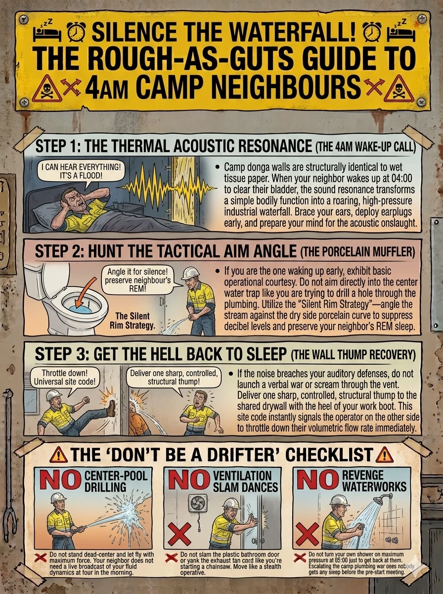

Optimised web copy shown. Exact original retained for provenance.
SILENCE THE WATERFALL! THE ROUGH-AS-GUTS GUIDE TO 4AM CAMP NEIGHBOURS
STEP 1 THE THERMAL ACOUSTIC RESONANCE (THE 4AM WAKE-UP CALL)
Camp donga walls are structurally identical to wet tissue paper. When your neighbor wakes up at 04:00 to clear their bladder, the sound resonance transforms a simple bodily function into a roaring, high-pressure industrial waterfall. Brace your ears, deploy earplugs early, and prepare your mind for the acoustic onslaught.
I CAN HEAR EVERYTHING! IT’S A FLOOD!
Scene: Worker lies awake in bed under grey bedding with hands clamped over ears. Huge yellow sound-wave graphic travels through thin shared wall.
STEP 2 HUNT THE TACTICAL AIM ANGLE (THE PORCELAIN MUFFLER)
If you are the one waking up early, exhibit basic operational courtesy. Do not aim directly into the center water trap like you are trying to drill a hole through the plumbing. Utilize the “Silent Rim Strategy”: angle the stream against the dry side porcelain curve to suppress decibel levels and preserve your neighbor’s REM sleep.
Angle it for silence! preserve neighbour’s REM!
In-image labels: The Silent Rim Strategy.
Scene: Diagram of open toilet with orange arrow pointing toward inside rim. At right hard-hatted worker stands urinating into a toilet, illustrating stream angle.
STEP 3 GET THE HELL BACK TO SLEEP (THE WALL THUMP RECOVERY)
If the noise breaches your auditory defenses, do not launch a verbal war or scream through the vent. Deliver one sharp, controlled, structural thump to the shared drywall with the heel of your work boot. This site code instantly signals the operator on the other side to throttle down their volumetric flow rate immediately.
Throttle down! Universal site code!
Deliver one sharp, controlled, structural thump!
Scene: A yellow-hi-vis worker raises a booted leg and kicks the shared wall on the left. A cropped orange-clad person is visible at the wall centre. A separate startled yellow-hi-vis man on the right holds a hand at his chest. An impact starburst marks the wall thump.
THE ‘DON’T BE A DRIFTER’ CHECKLIST
NO CENTER-POOL DRILLING
Do not stand dead-center and let fly with maximum force. Your neighbor does not need a live broadcast of your fluid dynamics at four in the morning.
Scene: Worker holds a long hose with high-pressure jet producing a large splash.
NO VENTILATION SLAM DANCES
Do not slam the plastic bathroom door or yank the exhaust fan cord like you’re starting a chainsaw. Move like a stealth operative.
Scene: Worker pushes/slams bathroom door beside wall-mounted extractor fan and pull cord; red X.
NO REVENGE WATERWORKS
Do not turn your own shower on maximum pressure at 05:00 just to get back at them. Escalating the camp plumbing war goes nobody gets any sleep before the pre-start meeting.
Scene: Worker uses a shower with vigorous spray while holding a small object; red X.
Source defects and unclear lettering
- Final checklist sentence is malformed: ‘Escalating the camp plumbing war goes nobody gets any sleep…’.
- ‘Neighbor’ and ‘neighbour’ spellings vary. ‘Thermal acoustic resonance’ is presented as comic technical language.
- Original source depicts wall kicking as a solution; source claims not verified.
Image brief ingredients
Layout: steps_checklist
- Keep this as shared-wall camp etiquette comedy with exaggerated sound waves, toilet aim diagram, and escalating noise gags.
- Preserve distinction between diagram, action scene, and prohibited checklist actions.
- Original safety and behavioural claims are unverified.
The JSON download contains the full source record and a separate draft image prompt for each scene.
07Site drug and alcohol testing
Camp and workplace behaviour+
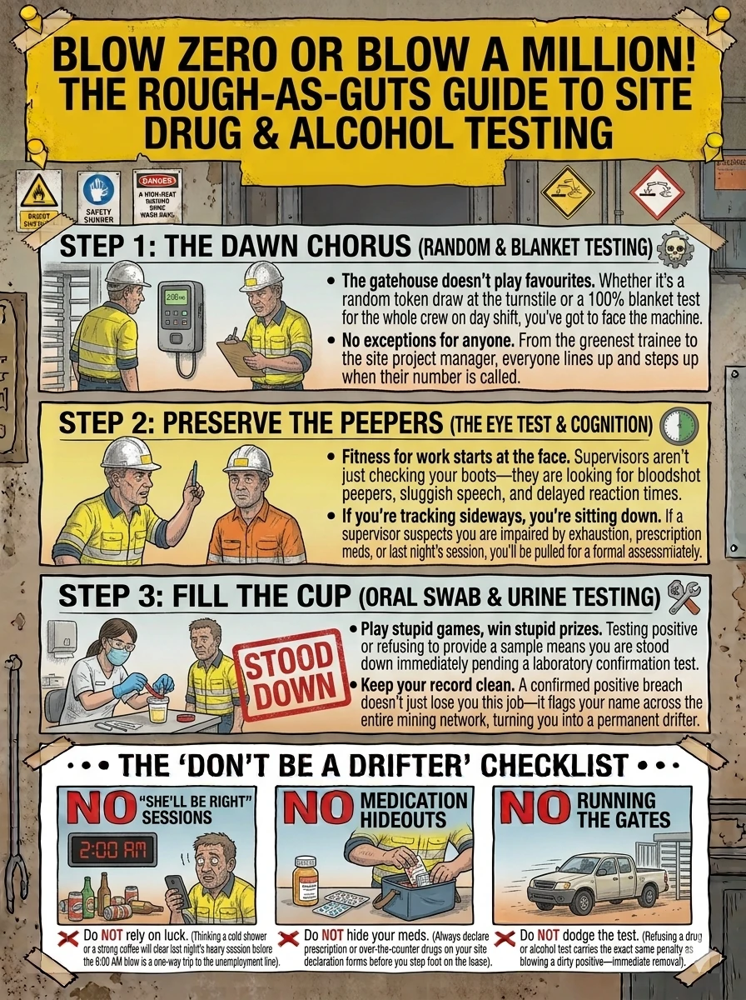

Optimised web copy shown. Exact original retained for provenance.
BLOW ZERO OR BLOW A MILLION! THE ROUGH-AS-GUTS GUIDE TO SITE DRUG & ALCOHOL TESTING
STEP 1 THE DAWN CHORUS (RANDOM & BLANKET TESTING)
The gatehouse doesn’t play favourites. Whether it’s a random token draw at the turnstile or a 100% blanket test for the whole crew on day shift, you’ve got to face the machine.
No exceptions for anyone. From the greenest trainee to the site project manager, everyone lines up and steps up when their number is called.
In-image labels: 200[unclear]
Scene: Worker stands facing wall-mounted breath-test unit beside gatehouse turnstile. Another hard-hatted worker records results on clipboard.
STEP 2 PRESERVE THE PEEPERS (THE EYE TEST & COGNITION)
Fitness for work starts at the face. Supervisors aren’t just checking your boots. They are looking for bloodshot peepers, sluggish speech, and delayed reaction times.
If you’re tracking sideways, you’re sitting down. If a supervisor suspects you are impaired by exhaustion, prescription meds, or last night’s session, you’ll be pulled for a formal assessmiately.
Scene: Supervisor holds a raised finger in front of a serious-looking orange-shirted worker’s face for an eye/reaction test; circular eye-like icon beside heading.
STEP 3 FILL THE CUP (ORAL SWAB & URINE TESTING)
Play stupid games, win stupid prizes. Testing positive or refusing to provide a sample means you are stood down immediately pending a laboratory confirmation test.
Keep your record clean. A confirmed positive breach doesn’t just lose you this job. It flags your name across the entire mining network, turning you into a permanent drifter.
In-image labels: STOOD DOWN
Scene: Masked female clinician wearing glasses and blue gloves handles a sample cup at clinic bench while worried hi-vis male worker waits. Large red rubber-stamp motif reads STOOD DOWN.
THE ‘DON’T BE A DRIFTER’ CHECKLIST
NO “SHE’LL BE RIGHT” SESSIONS
Do NOT rely on luck. (Thinking a cold shower or a strong coffee will clear last night’s heavy ssssion bslore the 6:00 AM blow is a one-way trip to the unemployment line).
Scene: Worried worker looks at phone beside assorted beer bottles/cans and clock reading 2:00 AM.
NO MEDICATION HIDEOUTS
Do NOT hide your meds. (Always declare prescription or over-the-counter drugs on your site declaration forms before you step foot on the lease).
Scene: Worker stuffs medicine packets into an open work bag; prescription bottle and blister pack on table. Bottle small print unreadable.
NO RUNNING THE GATES
Do NOT dodge the test. (Refusing a drug or alcohol test carries the exact same penalty as blowing a dirty positive: immediate removal).
Scene: Beige light utility vehicle drives quickly away from mine turnstile/gate.
Source defects and unclear lettering
- Step 2 ends with garbled ‘formal assessmiately’. Small session paragraph has misspellings/malformed letters.
- Background wall safety signs contain mostly pseudo-text, including ‘SAFETY SHUNRER’; not meaningful instructions.
- The disciplinary, legal and industry-wide employment assertions are unverified source claims.
Image brief ingredients
Layout: steps_checklist
- Render breath-test gatehouse, eye test and clinical sample collection as distinct recognisable scenes; use a consistent worker design.
- Keep clock time, red STOOD DOWN stamp, medication concealment and vehicle escape as separate visual cues.
- Original workplace policy and safety claims are unverified.
The JSON download contains the full source record and a separate draft image prompt for each scene.
08Natural disasters
Outdoors and everyday humour+
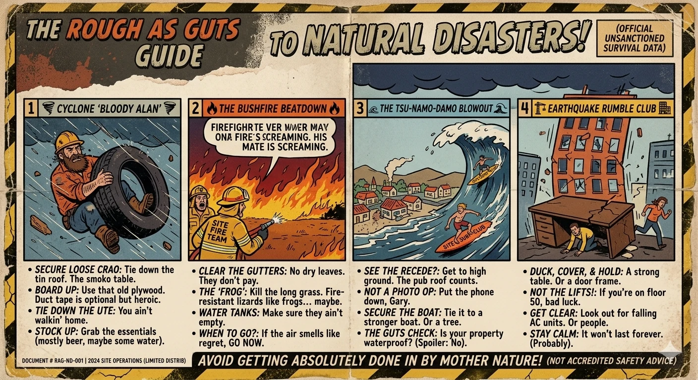

Optimised web copy shown. Exact original retained for provenance.
THE ROUGH AS GUTS GUIDE TO NATURAL DISASTERS!
(OFFICIAL UNSANCTIONED SURVIVAL DATA)
1 CYCLONE ‘BLOODY ALAN’
SECURE LOOSE CRAO: Tie down the tin roof. The smoko table.
BOARD UP: Use that old plywood. Duct tape is optional but heroic.
TIE DOWN THE UTE: You ain’t walkin’ home.
STOCK UP: Grab the essentials (mostly beer, maybe some water).
Scene: Bearded tradesman in orange shirt and yellow hard hat is blown sideways in diagonal rain, clinging to or carrying a large vehicle tyre while airborne debris flies.
2 THE BUSHFIRE BEATDOWN
CLEAR THE GUTTERS: No dry leaves. They don’t pay.
THE ‘FROG’: Kill the long grass. Fire-resistant lizards like frogs… maybe.
WATER TANKS: Make sure they ain’t empty.
WHEN TO GO?: If the air smells like regret, GO NOW.
FIREFIGHRTE VER [unclear] MAV ONA FIRE’S SCREAMING. HIS MATE IS SCREAMING.
In-image labels: SITE FIRE TEAM
Scene: Firefighter in yellow gear directs hose at large bushfire while another yellow-clad worker behind him screams. Speech bubble contains visibly malformed lettering.
3 THE TSU-NAMO-DAMO BLOWOUT
SEE THE RECEDE?: Get to high ground. The pub roof counts.
NOT A PHOTO OP: Put the phone down, Gary.
SECURE THE BOAT: Tie it to a stronger boat. Or a tree.
THE GUTS CHECK: Is your property waterproof? (Spoiler: No).
In-image labels: SITE SURF CLUB / [unclear board lettering]
Scene: Two workers surf an enormous breaking tsunami wave above a small coastal town; foreground surfer in red shorts rides orange SITE SURF CLUB board, second surfer higher on wave.
4 EARTHQUAKE RUMBLE CLUB
DUCK, COVER, & HOLD: A strong table. Or a door frame.
NOT THE LIFTS!: If you’re on floor 50, bad luck.
GET CLEAR: Look out for falling AC units. Or people.
STAY CALM: It won’t last forever. (Probably).
Scene: One man crawls under a large cracked wooden desk while another runs beside it. Tilting multistorey building sheds bricks; ground cracked.
Source footer
DOCUMENT # RAG-ND-001 | 2024 SITE OPERATIONS (LIMITED DISTRIB)
AVOID GETTING ABSOLUTELY DONE IN BY MOTHER NATURE! (NOT ACCREDITED SAFETY ADVICE)
Source defects and unclear lettering
- Panel 1 reads ‘CRAO’ rather than an assumed correction.
- Bushfire speech bubble is substantially garbled; transcription follows visible letters and should not be treated as intentional copy.
- Surfer’s upper board small lettering unclear.
- Several comic survival tips and safety claims are unverified.
Image brief ingredients
Layout: four_strip
- Maintain four separate cyclone, bushfire, tsunami and earthquake scenarios; do not blend hazards into one setting.
- Leave speech/captions for typesetting after illustration, especially malformed original bubble.
- Original safety claims are unverified.
The JSON download contains the full source record and a separate draft image prompt for each scene.
09Site emergency response team
Emergency response and health+
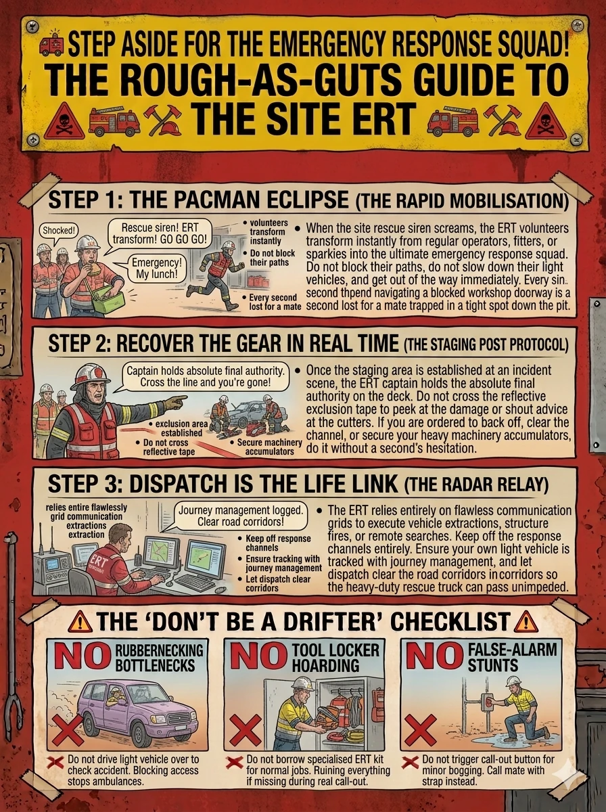

Optimised web copy shown. Exact original retained for provenance.
STEP ASIDE FOR THE EMERGENCY RESPONSE SQUAD! THE ROUGH-AS-GUTS GUIDE TO THE SITE ERT
STEP 1 THE PACMAN ECLIPSE (THE RAPID MOBILISATION)
When the site rescue siren screams, the ERT volunteers transform instantly from regular operators, fitters, or sparkies into the ultimate emergency response squad. Do not block their paths, do not slow down their light vehicles, and get out of the way immediately. Every sin.. second they spend navigating a blocked workshop doorway is a second lost for a mate trapped in a tight spot down the pit.
Shocked!
Rescue siren! ERT transform! GO GO GO!
Emergency! My lunch!
In-image labels: volunteers transform instantly / Do not block their paths / Every second lost for a mate
Scene: Foreground worker in red/orange hi-vis holds a green lunch box and appears surprised while another worker stands behind; ERT responder runs to right in red rescue vest. Small rescue truck icon.
STEP 2 RECOVER THE GEAR IN REAL TIME (THE STAGING POST PROTOCOL)
Once the staging area is established at an incident scene, the ERT captain holds the absolute final authority on the deck. Do not cross the reflective exclusion tape to peek at the damage or shout advice at the cutters. If you are ordered to back off, clear the channel, or secure your heavy machinery accumulators, do it without a second’s hesitation.
Captain holds absolute final authority. Cross the line and you’re gone!
In-image labels: exclusion area established / Do not cross reflective tape / Secure machinery accumulators
Scene: Helmeted ERT captain in red vest points firmly to right; two responders kneel by extraction/rescue equipment inside taped-off area.
STEP 3 DISPATCH IS THE LIFE LINK (THE RADAR RELAY)
The ERT relies entirely on flawless communication grids to execute vehicle extractions, structure fires, or remote searches. Keep off the response channels entirely. Ensure your own light vehicle is tracked with journey management, and let dispatch clear the road corridors in corridors so the heavy-duty rescue truck can pass unimpeded.
Journey management logged. Clear road corridors!
In-image labels: relies entire flawlessly grid communication extractions extraction / Keep off response channels / Ensure tracking with journey management / Let dispatch clear corridors
Scene: Seated ERT dispatcher in red vest uses a desk with multiple radio/computer screens, one showing a map.
THE ‘DON’T BE A DRIFTER’ CHECKLIST
NO RUBBERNECKING BOTTLENECKS
Do not drive light vehicle over to check accident. Blocking access stops ambulances.
Scene: Purple SUV/light vehicle on dusty road; red X.
NO TOOL LOCKER HOARDING
Do not borrow specialised ERT kit for normal jobs. Ruining everything if missing during real call-out.
Scene: Worker takes orange/red rescue equipment from open rescue gear cupboard; red X.
NO FALSE-ALARM STUNTS
Do not trigger call-out button for minor bogging. Call mate with strap instead.
Scene: Worker kneels in shallow puddle and reaches toward a red emergency call button mounted on post; red X.
Source defects and unclear lettering
- ‘THE PACMAN ECLIPSE’ is unusual source heading without explanation.
- Step 1 contains ‘Every sin.. second’. Step 3 duplicates ‘corridors’ and has garbled left scene text.
- Some bottom copy uses abbreviated/grammatically incomplete sentences.
- Original emergency authority and procedure claims are unverified.
Image brief ingredients
Layout: steps_checklist
- Emphasise workers yielding space to ERT, clear incident boundary, and organised dispatch/radio roles.
- Use distinct red ERT vests to distinguish responders from ordinary workers.
- Original safety claims and site procedures are unverified.
The JSON download contains the full source record and a separate draft image prompt for each scene.
10Mine-site heat stress
Emergency response and health+
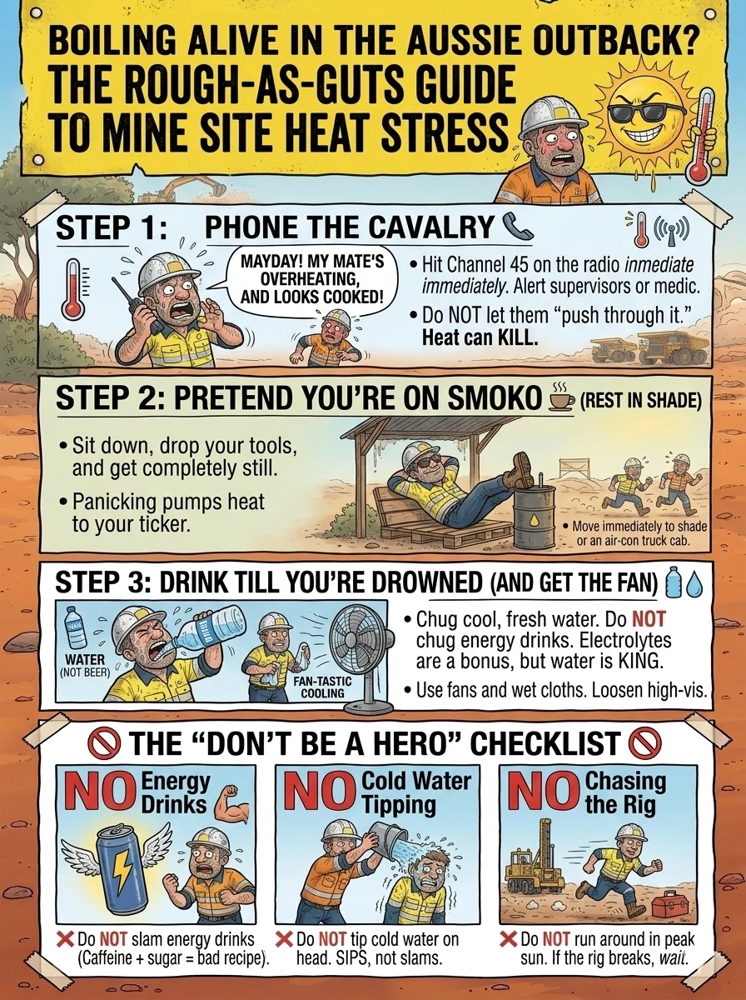

Optimised web copy shown. Exact original retained for provenance.
BOILING ALIVE IN THE AUSSIE OUTBACK? THE ROUGH-AS-GUTS GUIDE TO MINE SITE HEAT STRESS
STEP 1 PHONE THE CAVALRY
Hit Channel 45 on the radio immediate immediately. Alert supervisors or medic.
Do NOT let them “push through it.” Heat can KILL.
MAYDAY! MY MATE’S OVERHEATING, AND LOOKS COOKED!
Scene: Sweating hard-hatted worker speaks urgently into handheld radio while another orange-shirted worker staggers in background. Thermometer and radio-signal icons; haul trucks in distance.
STEP 2 PRETEND YOU’RE ON SMOKO (REST IN SHADE)
Sit down, drop your tools, and get completely still.
Panicking pumps heat to your ticker.
Move immediately to shade or an air-con truck cab.
Scene: Relaxed yellow-hi-vis worker wearing sunglasses reclines under small timber shade shelter with feet on metal drum. Two small workers run in full sun at right; folding chair in background.
STEP 3 DRINK TILL YOU’RE DROWNED (AND GET THE FAN)
Chug cool, fresh water. Do NOT chug energy drinks. Electrolytes are a bonus, but water is KING.
Use fans and wet cloths. Loosen high-vis.
In-image labels: WATER (NOT BEER) / FAN-TASTIC COOLING
Scene: Sweaty worker tilts large water bottle into mouth; smaller worker holds bottle near large pedestal fan. Water-bottle and droplet icons.
THE “DON’T BE A HERO” CHECKLIST
NO Energy Drinks
Do NOT slam energy drinks (Caffeine + sugar = bad recipe).
Scene: Winged blue energy-drink can with lightning bolt beside sweating orange-shirted worker flexing fist; small flexed arm icon.
NO Cold Water Tipping
Do NOT tip cold water on head. SIPS, not slams.
Scene: Orange-hi-vis worker empties bucket over distressed yellow-hi-vis worker’s head.
NO Chasing the Rig
Do NOT run around in peak sun. If the rig breaks, wait.
Scene: A yellow-hi-vis worker runs to the right past a drill rig and a red toolbox. The drill rig is behind him at the left; his destination is not shown.
Source defects and unclear lettering
- Step 1 duplicates ‘immediate immediately’.
- Specific radio channel is asserted without site context.
- Heat treatment and hydration assertions are source material only and are unverified; imagery contradicts some apparent guidance (relaxed reclining scene).
Image brief ingredients
Layout: steps_checklist
- Retain outback heat, sweating workers, radio call, shelter, bottle and fan as distinct scene elements.
- Do not turn source treatment claims into final medical instructions without review.
- Original safety and medical claims are unverified.
The JSON download contains the full source record and a separate draft image prompt for each scene.
11Mine-site personal protective equipment
Tools and physical work+
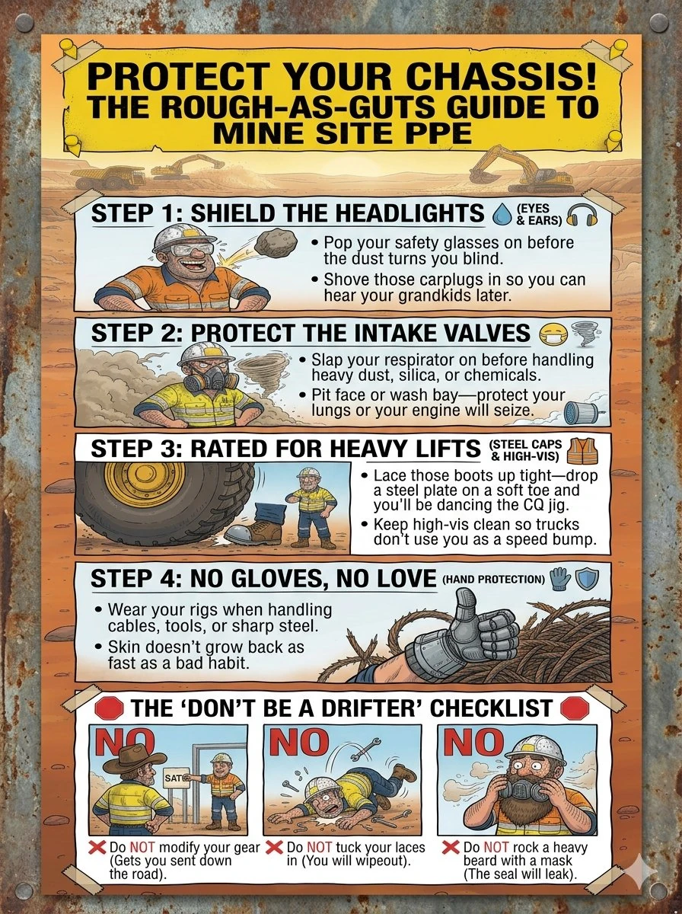

Optimised web copy shown. Exact original retained for provenance.
PROTECT YOUR CHASSIS! THE ROUGH-AS-GUTS GUIDE TO MINE SITE PPE
STEP 1 SHIELD THE HEADLIGHTS (EYES & EARS)
Pop your safety glasses on before the dust turns you blind.
Shove those carplugs in so you can hear your grandkids later.
Scene: Smiling orange-shirted worker wears hard hat and safety glasses while a rock flies toward his glasses, with yellow impact spark. Water-drop and earmuff icons by heading.
STEP 2 PROTECT THE INTAKE VALVES
Slap your respirator on before handling heavy dust, silica, or chemicals.
Pit face or wash bay: protect your lungs or your engine will seize.
Scene: Yellow-hi-vis worker wears hard hat and dual-filter respirator amid dust clouds and small dust whirlwinds; detached cylindrical filter at right; face and tornado icons.
STEP 3 RATED FOR HEAVY LIFTS (STEEL CAPS & HIGH-VIS)
Lace those boots up tight. Drop a steel plate on a soft toe and you’ll be dancing the CQ jig.
Keep high-vis clean so trucks don’t use you as a speed bump.
Scene: Huge haul-truck tyre beside oversized steel-cap work boot; small worker stands to right; orange reflective vest icon.
STEP 4 NO GLOVES, NO LOVE (HAND PROTECTION)
Wear your rigs when handling cables, tools, or sharp steel.
Skin doesn’t grow back as fast as a bad habit.
Scene: Close-up protective gloved hand gives thumbs-up in front of a mass of frayed steel cables; glove and shield icons.
THE ‘DON’T BE A DRIFTER’ CHECKLIST
NO
Do NOT modify your gear (Gets you sent down the road).
Scene: Worker wears broad cowboy hat in place of hard hat, facing another worker who gestures toward a doorway/sign. Tiny sign reads ‘SAT[unclear]’.
NO
Do NOT tuck your laces in (You will wipeout).
Scene: Worker trips face-first with boot laces trailing among scattered tools.
NO
Do NOT rock a heavy beard with a mask (The seal will leak).
Scene: Wide-eyed worker with large brown beard holds respirator against face; dust clouds at sides.
Source defects and unclear lettering
- Source prints ‘carplugs’ for apparent intended earplugs and ‘Wear your rigs’.
- Checklist sign has incomplete/unclear text.
- Source PPE guidance and terminology are unverified.
Image brief ingredients
Layout: steps_checklist
- Keep the vehicle/body metaphor through glasses/headlights, respirator/intake, boots/heavy loads, and gloves/cables.
- Preserve recognisable PPE silhouettes; illustration should not invent extra printed instructions.
- Original safety claims are unverified.
The JSON download contains the full source record and a separate draft image prompt for each scene.
12Sulphuric acid spills: landscape version
Chemicals and exposure+
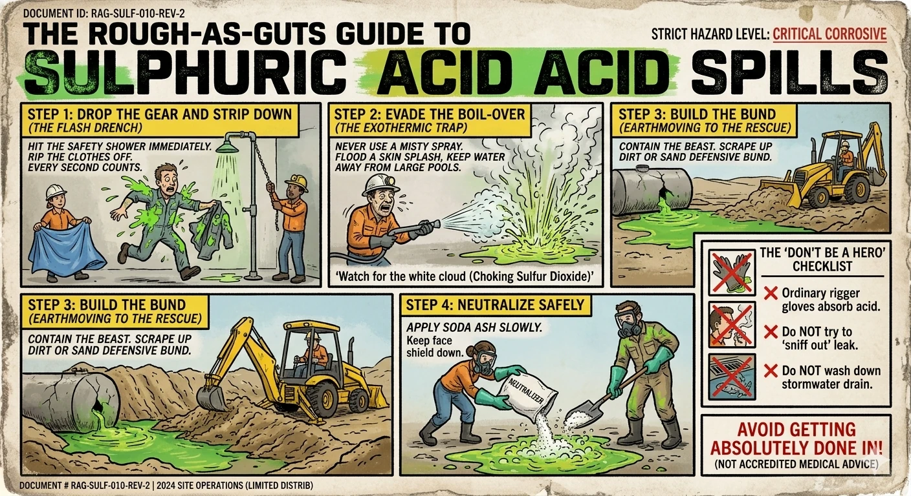

Optimised web copy shown. Exact original retained for provenance.
THE ROUGH-AS-GUTS GUIDE TO SULPHURIC ACID ACID SPILLS
DOCUMENT ID: RAG-SULF-010-REV-2
STRICT HAZARD LEVEL: CRITICAL CORROSIVE
STEP 1 DROP THE GEAR AND STRIP DOWN (THE FLASH DRENCH)
HIT THE SAFETY SHOWER IMMEDIATELY. RIP THE CLOTHES OFF. EVERY SECOND COUNTS.
Scene: Alarmed worker in grey clothing splashed with vivid green liquid strips off jacket beside activated emergency shower. Orange-shirted worker at right pulls shower chain; another at left holds blue privacy sheet.
STEP 2 EVADE THE BOIL-OVER (THE EXOTHERMIC TRAP)
NEVER USE A MISTY SPRAY. FLOOD A SKIN SPLASH, KEEP WATER AWAY FROM LARGE POOLS.
‘Watch for the white cloud (Choking Sulfur Dioxide)’
Scene: Hard-hatted orange-shirted worker points hose toward bright green spill; dramatic green splash and large white vapour cloud rise from pool.
STEP 3 BUILD THE BUND (EARTHMOVING TO THE RESCUE)
CONTAIN THE BEAST. SCRAPE UP DIRT OR SAND DEFENSIVE BUND.
Scene: Yellow backhoe loader moves dirt near leaking grey drum/tank and spreading green liquid; open sandy site.
STEP 3 BUILD THE BUND (EARTHMOVING TO THE RESCUE)
CONTAIN THE BEAST. SCRAPE UP DIRT OR SAND DEFENSIVE BUND.
Scene: Larger repeat illustration: yellow backhoe excavates/pushes sand ridge around green spill from horizontal leaking drum/tank.
STEP 4 NEUTRALIZE SAFELY
APPLY SODA ASH SLOWLY.
Keep face shield down.
In-image labels: NEUTRALIZER
Scene: Two workers wearing respirators, face protection and long green gloves work at green bubbling spill. One pours white powder from large NEUTRALIZER bag while the other holds shovel; one orange shirt, one olive coverall.
THE ‘DON’T BE A HERO’ CHECKLIST
Ordinary rigger gloves absorb acid.
Scene: Grey work gloves with green liquid and red X.
Do NOT try to ‘sniff out’ leak.
Scene: Face leaning toward fumes, red X.
Do NOT wash down stormwater drain.
Scene: Liquid directed into grated drain, red X.
Source footer
DOCUMENT # RAG-SULF-010-REV-2 | 2024 SITE OPERATIONS (LIMITED DISTRIB)
AVOID GETTING ABSOLUTELY DONE IN!
(NOT ACCREDITED MEDICAL ADVICE)
Source defects and unclear lettering
- Title repeats ‘ACID ACID’. Step 3 is duplicated as two separate panels.
- Step 2 image shows hose directed toward spill despite body text warning against water near large pools.
- Source contains chemical handling, neutralisation and first-aid assertions; none verified.
Image brief ingredients
Layout: landscape_safety
- Keep distinct skin splash/shower, reaction cloud, earth bund, and neutralisation scenes; source has duplicate bund scene rather than a missing inferred step.
- Green liquid is a comic visual convention in the source.
- Original chemical safety and medical claims are unverified; this is a source catalogue.
The JSON download contains the full source record and a separate draft image prompt for each scene.
13Vending-machine use
Tools and physical work+
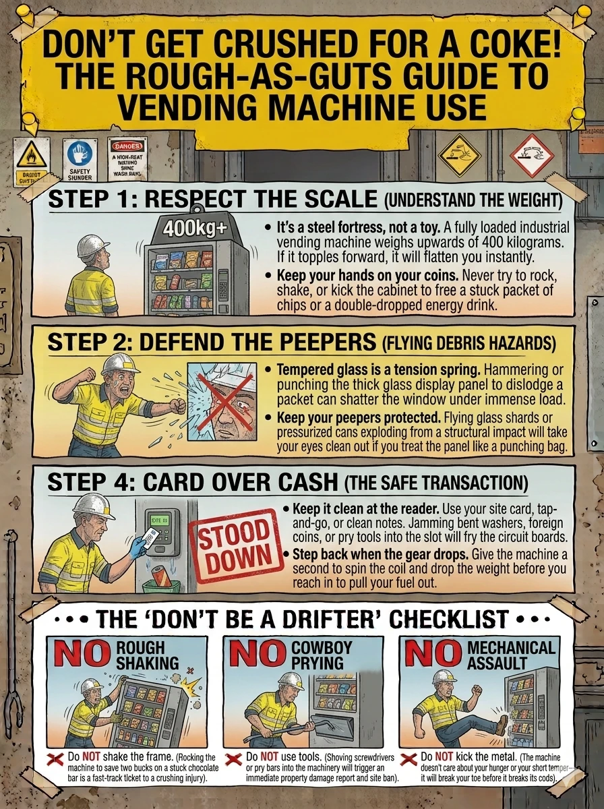

Optimised web copy shown. Exact original retained for provenance.
DON’T GET CRUSHED FOR A COKE! THE ROUGH-AS-GUTS GUIDE TO VENDING MACHINE USE
STEP 1 RESPECT THE SCALE (UNDERSTAND THE WEIGHT)
It’s a steel fortress, not a toy. A fully loaded industrial vending machine weighs upwards of 400 kilograms. If it topples forward, it will flatten you instantly.
Keep your hands on your coins. Never try to rock, shake, or kick the cabinet to free a stuck packet of chips or a double-dropped energy drink.
In-image labels: 400kg+
Scene: Worker looks up at large snack vending machine with 400kg+ label above it; rows of snack packets, coin/card slot at right.
STEP 2 DEFEND THE PEEPERS (FLYING DEBRIS HAZARDS)
Tempered glass is a tension spring. Hammering or punching the thick glass display panel to dislodge a packet can shatter the window under immense load.
Keep your peepers protected. Flying glass shards or pressurized cans exploding from a structural impact will take your eyes clean out if you treat the panel like a punching bag.
Scene: Angry hard-hatted worker raises fist toward glass with shards around him; close-up inset of face behind broken window crossed with red X.
STEP 4 CARD OVER CASH (THE SAFE TRANSACTION)
Keep it clean at the reader. Use your site card, tap-and-go, or clean notes. Jamming bent washers, foreign coins, or pry tools into the slot will fry the circuit boards.
Step back when the gear drops. Give the machine a second to spin the coil and drop the weight before you reach in to pull your fuel out.
In-image labels: STOOD DOWN / [unclear machine display]
Scene: A worker in blue gloves presents a card to a wall/machine reader. A green bin sits below the reader. A large red STOOD DOWN stamp appears despite the transaction heading.
THE ‘DON’T BE A DRIFTER’ CHECKLIST
NO ROUGH SHAKING
Do NOT shake the frame. (Rocking the machine to save two bucks on a stuck chocolate bar is a fast-track ticket to a crushing injury).
Scene: Worker pushes tilted vending machine; impact stars and flying debris.
NO COWBOY PRYING
Do NOT use tools. (Shoving screwdrivers or pry bars into the machinery will trigger an immediate property damage report and site ban).
Scene: Worker forces long pry bar into lower collection flap.
NO MECHANICAL ASSAULT
Do NOT kick the metal. (The machine doesn’t care about your hunger or your short temper. It will break your toe before it breaks its cods).
Scene: Worker kicks vending-machine casing with boot; impact lines.
Source defects and unclear lettering
- Step sequence skips STEP 3; third panel labelled STEP 4.
- STOOD DOWN stamp and card-reader illustration appear inherited from another subject.
- Background signs contain pseudo-text.
- Last caption appears to read ‘cods’; retained as source lettering.
- Source injury, electrical and disciplinary claims unverified.
Image brief ingredients
Layout: steps_checklist
- Core visual actions are looking at heavy machine, punching glass, card transaction, shaking, prying and kicking; keep them separate.
- Avoid carrying inherited stand-down stamp into new art without editorial choice.
- Original safety and policy claims are unverified.
The JSON download contains the full source record and a separate draft image prompt for each scene.
14Working in the wash bay
Tools and physical work+
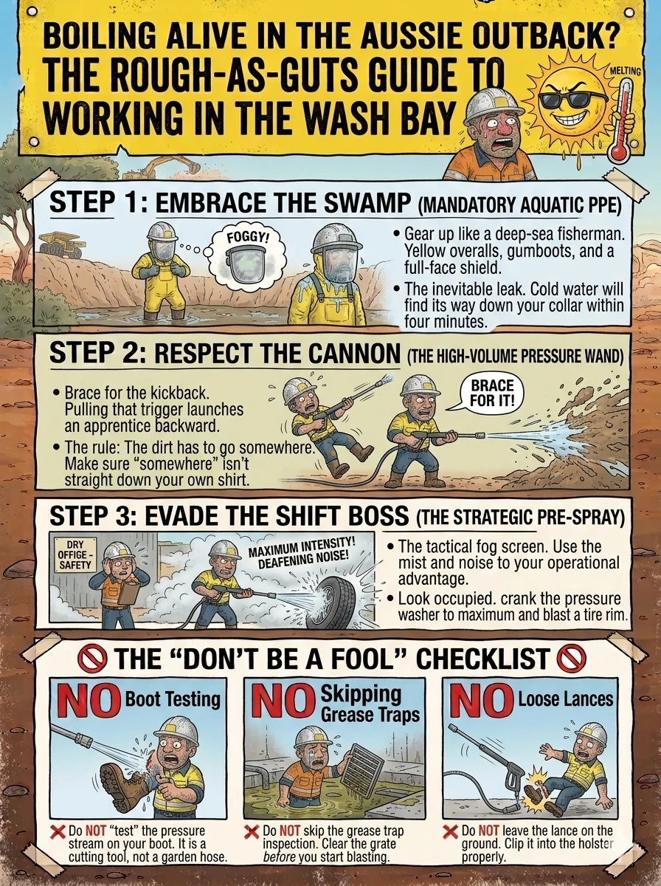

Optimised web copy shown. Exact original retained for provenance.
BOILING ALIVE IN THE AUSSIE OUTBACK? THE ROUGH-AS-GUTS GUIDE TO WORKING IN THE WASH BAY
STEP 1 EMBRACE THE SWAMP (MANDATORY AQUATIC PPE)
Gear up like a deep-sea fisherman. Yellow overalls, gumboots, and a full-face shield.
The inevitable leak. Cold water will find its way down your collar within four minutes.
In-image labels: FOGGY!
Scene: Two workers in yellow waterproof overalls, boots and face shields stand in shallow wash-bay water; one adjusts his collar. Thought bubble shows fogged face shield.
STEP 2 RESPECT THE CANNON (THE HIGH-VOLUME PRESSURE WAND)
Brace for the kickback. Pulling that trigger launches an apprentice backward.
The rule: The dirt has to go somewhere. Make sure “somewhere” isn’t straight down your own shirt.
BRACE FOR IT!
Scene: One worker is thrown backward holding pressure-washer lance while another firmly braces a lance and sprays dirty bank/wall, sending debris sideways.
STEP 3 EVADE THE SHIFT BOSS (THE STRATEGIC PRE-SPRAY)
The tactical fog screen. Use the mist and noise to your operational advantage.
Look occupied. crank the pressure washer to maximum and blast a tire rim.
In-image labels: DRY OFFIGE - SAFETY / MAXIMUM INTENSITY! DEAFENING NOISE!
Scene: Orange-shirted boss covers ears outside office doorway; yellow-shirted worker creates huge mist cloud blasting tyre rim with washer.
THE “DON’T BE A FOOL” CHECKLIST
NO Boot Testing
Do NOT “test” the pressure stream on your boot. It is a cutting tool, not a garden hose.
Scene: Worker lifts boot into direct pressure-washer jet, with water splashing off toe.
NO Skipping Grease Traps
Do NOT skip the grease trap inspection. Clear the grate before you start blasting.
Scene: Worker stands waist-deep in murky greenish water and holds removed drain grate.
NO Loose Lances
Do NOT leave the lance on the ground. Clip it into the holster properly.
Scene: Loose pressure lance recoils or trips worker onto his backside; yellow impact star at boot.
Source defects and unclear lettering
- Inherited heat-stress headline and sun/thermometer illustration remain above wash-bay subject.
- Office label reads ‘OFFIGE’.
- Some source comedy encourages maximum pressure/noise to avoid boss; safety assertions are unverified.
Image brief ingredients
Layout: steps_checklist
- Keep waterproof PPE, pressure-washer recoil, mist/noise cloud, boot jet, blocked grease trap and unsecured lance as distinct visual motifs.
- Inherited heat banner is part of source but should be an explicit editorial decision for regenerated assets.
- Original safety claims are unverified.
The JSON download contains the full source record and a separate draft image prompt for each scene.
15The site nurse
Camp and workplace behaviour+
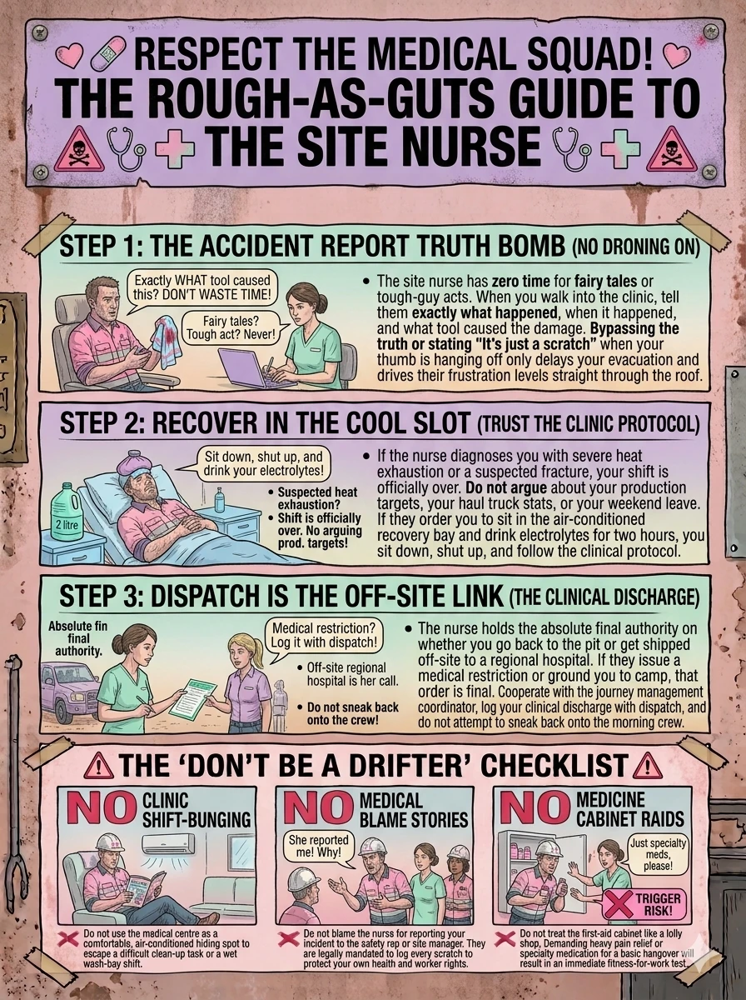

Optimised web copy shown. Exact original retained for provenance.
RESPECT THE MEDICAL SQUAD! THE ROUGH-AS-GUTS GUIDE TO THE SITE NURSE
STEP 1 THE ACCIDENT REPORT TRUTH BOMB (NO DRONING ON)
The site nurse has zero time for fairy tales or tough-guy acts. When you walk into the clinic, tell them exactly what happened, when it happened, and what tool caused the damage. Bypassing the truth or stating “It’s just a scratch” when your thumb is hanging off only delays your evacuation and drives their frustration levels straight through the roof.
Exactly WHAT tool caused this? DON’T WASTE TIME!
Fairy tales? Tough act? Never!
Scene: Pink-shirted male patient holds bloodied cloth and bandaged/injured hand across desk from mint-scrubbed female nurse using a laptop.
STEP 2 RECOVER IN THE COOL SLOT (TRUST THE CLINIC PROTOCOL)
If the nurse diagnoses you with severe heat exhaustion or a suspected fracture, your shift is officially over. Do not argue about your production targets, your haul truck stats, or your weekend leave. If they order you to sit in the air-conditioned recovery bay and drink electrolytes for two hours, you sit down, shut up, and follow the clinical protocol.
Sit down, shut up, and drink your electrolytes!
In-image labels: Suspected heat exhaustion? / Shift is officially over. No arguing prod. targets! / 2 litre
Scene: Patient lies in pale-blue clinic bed with blue blanket and purple ice bag on head. Large 2 litre water container at bedside; wall air conditioner.
STEP 3 DISPATCH IS THE OFF-SITE LINK (THE CLINICAL DISCHARGE)
The nurse holds the absolute final authority on whether you go back to the pit or get shipped off-site to a regional hospital. If they issue a medical restriction or ground you to camp, that order is final. Cooperate with the journey management coordinator, log your clinical discharge with dispatch, and do not attempt to sneak back onto the morning crew.
Medical restriction? Log it with dispatch!
In-image labels: Abselute fin final authority. / Off-site regional hospital is her call. / Do not sneak back onto the crew!
Scene: Nurse holds clipboard and speaks with blonde lilac-shirted worker/coordinator outdoors; purple SUV behind them.
THE ‘DON’T BE A DRIFTER’ CHECKLIST
NO CLINIC SHIFT-BUNGING
Do not use the medical centre as a comfortabls, air-conditioned hiding spot to escape a difficult clean-up task or a wet wash-bay shift.
Scene: Hard-hatted worker lounges in clinic chair reading tablet/book beneath air conditioner.
NO MEDICAL BLAME STORIES
Do not blame the nurse for reporting your incident to the safety rep or site manager. They are legally mandated to log every scratch to protect your own health and worker rights.
She reported me! Why!
Scene: Pink-shirted worker gestures angrily while nurse and another worker stand behind; seated listener at left.
NO MEDICINE CABINET RAIDS
Do not treat the first-aid cabinet like a lolly shop. Demanding heavy pain relief or specialty medication for a basic hangover will result in an immediate fitness-for-work test.
Just specialty meds, please!
In-image labels: TRIGGER RISK!
Scene: Worker stands at open medicine cabinet holding a pill container while nurse raises hand to stop him; pink red-X warning bubble.
Source defects and unclear lettering
- Left label in step 3 is visibly garbled: ‘Abselute fin final authority.’
- ‘comfortabls’ appears in checklist.
- Source mixes comic character tone with unverified medical, authority, legal-reporting and disciplinary assertions.
Image brief ingredients
Layout: steps_checklist
- Keep respectful clinical roles clear: injured worker providing information, resting patient, documented discharge, and prohibited clinic misuse.
- Speech bubble tails should be deliberately assigned; source dialogue positioning is ambiguous in first panel.
- Original safety, medical and policy claims are unverified.
The JSON download contains the full source record and a separate draft image prompt for each scene.
16Live wires and electrical safety
Tools and physical work+
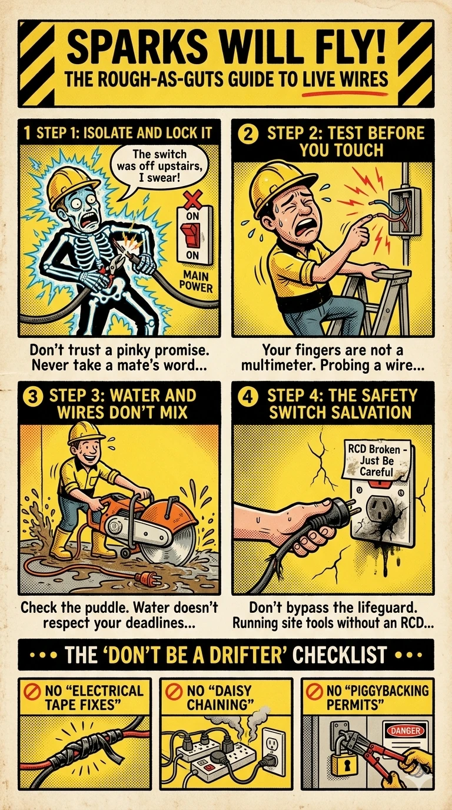

Optimised web copy shown. Exact original retained for provenance.
SPARKS WILL FLY! THE ROUGH-AS-GUTS GUIDE TO LIVE WIRES
1 STEP 1 ISOLATE AND LOCK IT
Don’t trust a pinky promise. Never take a mate’s word…
The switch was off upstairs, I swear!
In-image labels: ON / ON / MAIN POWER
Scene: Electrocuted worker in hard hat shown as blue-glowing skeleton, holding cable/sparking electrical tool. Wall switch labelled ON above and below, marked with red X.
2 STEP 2 TEST BEFORE YOU TOUCH
Your fingers are not a multimeter. Probing a wire…
Scene: Worker on step ladder reaches bare fingertip toward exposed wires in open wall junction box; red lightning marks and alarmed sweating face.
3 STEP 3 WATER AND WIRES DON’T MIX
Check the puddle. Water doesn’t respect your deadlines…
Scene: Smiling worker in gumboots operates orange powered cut-off saw while standing in muddy puddle. Electrical lead and unplugged plug lie in water in foreground; liquid splashes around saw.
4 STEP 4 THE SAFETY SWITCH SALVATION
Don’t bypass the lifeguard. Running site tools without an RCD…
In-image labels: RCD Broken - Just Be Careful
Scene: Close-up hand holds damaged/frayed electrical plug toward cracked wall socket with warning note taped above.
THE ‘DON’T BE A DRIFTER’ CHECKLIST
NO “ELECTRICAL TAPE FIXES”
Scene: Two cable ends joined with bulky wrapped black electrical tape; stress/spark lines.
NO “DAISY CHAINING”
Scene: Multiple power boards plugged into each other with tangled leads, one producing smoke.
NO “PIGGYBACKING PERMITS”
In-image labels: DANGER
Scene: Gloved hand uses bolt cutters on or beside padlocked electrical isolation point; red DANGER sign.
Source defects and unclear lettering
- Caption sentences intentionally or accidentally end with ellipses and are incomplete.
- First switch is labelled ON in both positions.
- Poster title directly depicts hazardous electricity behaviour for satire; procedural claims unverified.
Image brief ingredients
Layout: four_grid
- Use four distinct electrical hazards: isolation failure, touching live conductor, water around powered saw, damaged socket/RCD warning.
- Maintain bold black/yellow halftone visual system and three small checklist vignettes.
- Original electrical safety claims are unverified.
The JSON download contains the full source record and a separate draft image prompt for each scene.
17Wildlife interactions
Outdoors and everyday humour+
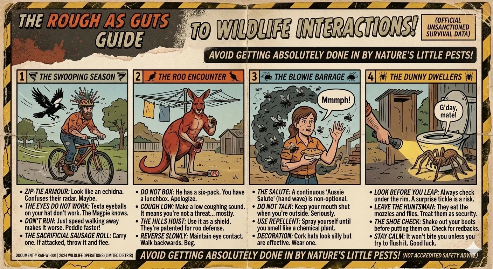

Optimised web copy shown. Exact original retained for provenance.
THE ROUGH AS GUTS GUIDE TO WILDLIFE INTERACTIONS!
(OFFICIAL UNSANCTIONED SURVIVAL DATA)
AVOID GETTING ABSOLUTELY DONE IN BY NATURE’S LITTLE PESTS!
1 THE SWOOPING SEASON
ZIP-TIE ARMOUR: Look like an echidna. Confuses their radar. Maybe.
THE EYES DO NOT WORK: Texta eyeballs on your hat don’t work. The Magpie knows.
DON’T RUN: Just speed walking away makes it worse. Peddle faster!
THE SACRIFICIAL SAUSAGE ROLL!: Carry one. If attacked, throw it and flee.
Scene: Bearded orange-shirted worker cycles on red bicycle wearing hard hat bristling with zip ties while black-and-white magpie swoops toward his head.
2 THE ROO ENCOUNTER
DO NOT BOX: He has a six-pack. You have a lunchbox. Apologize.
COUGH LOW: Make a low coughing sound. It means you’re not a threat… mostly.
THE HILLS HOIST: Use it as a shield. They’re patented for roo defense.
REVERSE SLOWLY: Maintain eye contact. Walk backwards. Beg.
Scene: Muscular red kangaroo stands in backyard holding a drink can, with rotary clothesline behind. Another can lies near tail; fence and shed.
3 THE BLOWIE BARRAGE
THE SALUTE: A continuous ‘Aussie Salute’ (hand wave) is non-optional.
DO NOT TALK: Keep your mouth shut when you’re outside. Seriously.
USE REPELLENT: Spray yourself until you smell like a chemical plant.
DECORATION: Cork hats look silly but are effective. Wear one.
Mmmph!
Scene: Orange-shirted woman holds meat pie and waves hand at dense swarm of oversized flies around her head/body near outdoor steps.
4 THE DUNNY DWELLERS
LOOK BEFORE YOU LEAP: Always check under the rim. A surprise tickle is a risk.
LEAVE THE HUNTSMAN: They eat the mozzies and flies. Treat them as security.
THE SHOE CHECK: Shake out your boots before putting them on. Check for redbacks.
STAY CALM: It won’t bite you unless you try to flush it. Good luck.
G’day, mate!
Scene: Huge huntsman spider on ground in front of open toilet, person’s hand shines torch at it. Outdoor timber dunny/shed and trees behind; greeting bubble appears beside toilet/spider.
Source footer
DOCUMENT # RAG-WI-001 | 2024 WILDLIFE OPERATIONS (LIMITED DISTRIB)
AVOID GETTING ABSOLUTELY DONE IN BY NATURE’S LITTLE PESTS! (NOT ACCREDITED SAFETY ADVICE)
Source defects and unclear lettering
- ‘Peddle faster’ is source spelling.
- Wildlife assertions combine jokes and unverified behavioural advice.
- Slogan is repeated in upper and lower black banners.
- The source slide places this embedded artwork with a slight left crop; this record describes the full extracted image.
Image brief ingredients
Layout: four_strip
- Keep four distinct species/contexts: magpie/cyclist, kangaroo/backyard clothesline, blowflies/pie, huntsman/outdoor toilet.
- Species identity, Australian props and overstated scale carry the humour.
- Original wildlife safety claims are unverified.
The JSON download contains the full source record and a separate draft image prompt for each scene.
18Chemical handling
Chemicals and exposure+
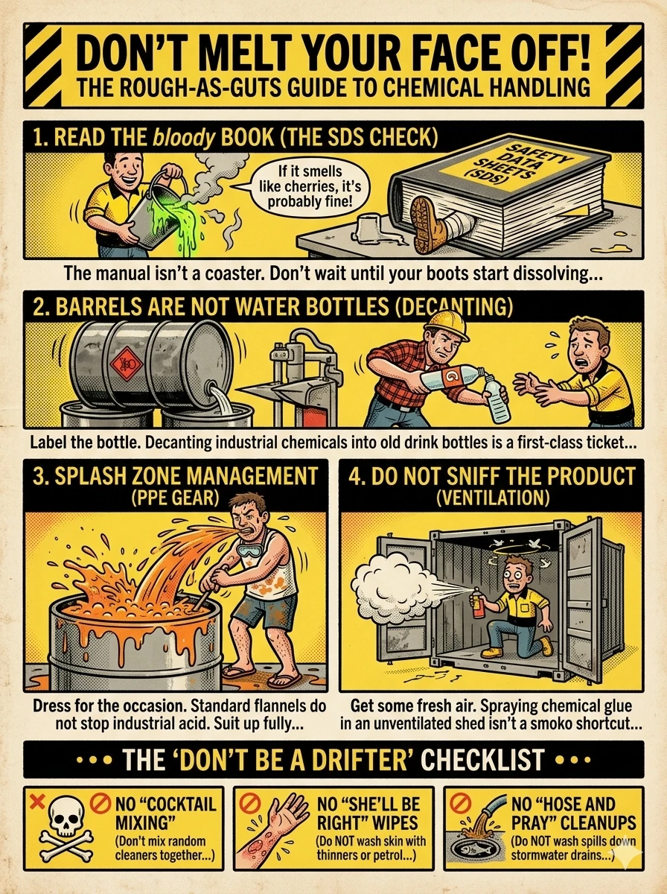

Optimised web copy shown. Exact original retained for provenance.
DON’T MELT YOUR FACE OFF! THE ROUGH-AS-GUTS GUIDE TO CHEMICAL HANDLING
1 READ THE bloody BOOK (THE SDS CHECK)
The manual isn’t a coaster. Don’t wait until your boots start dissolving…
If it smells like cherries, it’s probably fine!
In-image labels: SAFETY DATA SHEETS (SDS)
Scene: Smiling yellow-shirted worker pours fuming green chemical from open can. Enormous SDS book on table with dissolving/melted work boot and small spill beside it.
2 BARRELS ARE NOT WATER BOTTLES (DECANTING)
Label the bottle. Decanting industrial chemicals into old drink bottles is a first-class ticket…
In-image labels: C
Scene: Large grey chemical drum with red hazard diamond drains liquid near pump. Hard-hatted man in red checked shirt pours liquid from labelled bottle into clear drink bottle while worried yellow-shirted man reaches to stop him.
3 SPLASH ZONE MANAGEMENT (PPE GEAR)
Dress for the occasion. Standard flannels do not stop industrial acid. Suit up fully…
Scene: Unprotected man in singlet, shorts and thongs stirs open drum of orange liquid; dramatic splash shoots toward face. Safety goggles hang around neck.
4 DO NOT SNIFF THE PRODUCT (VENTILATION)
Get some fresh air. Spraying chemical glue in an unventilated shed isn’t a smoko shortcut…
Scene: Dizzy yellow-shirted worker kneels in open shipping-container-like shed spraying aerosol can; large white vapour cloud and birds/stars around head.
THE ‘DON’T BE A DRIFTER’ CHECKLIST
NO “COCKTAIL MIXING”
(Don’t mix random cleaners together…)
Scene: Skull and crossbones with red cross and prohibition symbol.
NO “SHE’LL BE RIGHT” WIPES
(Do NOT wash skin with thinners or petrol…)
Scene: Bare hand and forearm with red irritated patches and small cuts/drops.
NO “HOSE AND PRAY” CLEANUPS
(Do NOT wash spills down stormwater drains…)
Scene: Hose pours liquid into circular stormwater drain under prohibition sign.
Source defects and unclear lettering
- All four panel caption sentences end with ellipses, leaving incomplete explanations.
- SDS, chemical handling, PPE and ventilation claims are unverified source material.
- Tiny bottle and hazard-symbol lettering is decorative/unclear beyond visible ‘C’.
Image brief ingredients
Layout: four_grid
- Preserve full-width SDS and decanting setups, then paired splash/ventilation scenes.
- Keep text typesetting separate from art, especially SDS book title and prohibition captions.
- Original chemical safety claims are unverified.
The JSON download contains the full source record and a separate draft image prompt for each scene.
19Hydrofluoric acid exposure
Chemicals and exposure+
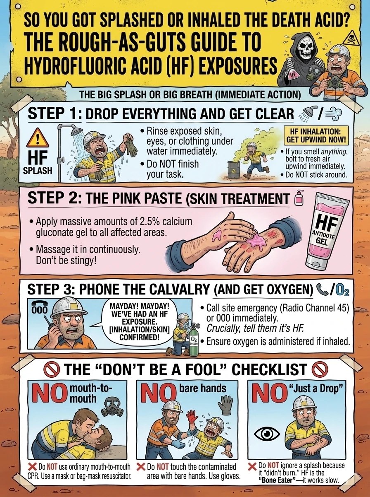

Optimised web copy shown. Exact original retained for provenance.
THE ROUGH-AS-GUTS GUIDE TO HYDROFLUORIC ACID (HF) EXPOSURES
SO YOU GOT SPLASHED OR INHALED THE DEATH ACID? / THE BIG SPLASH OR BIG BREATH (IMMEDIATE ACTION)
STEP 1 DROP EVERYTHING AND GET CLEAR
Rinse exposed skin, eyes, or clothing under water immediately.
Do NOT finish your task.
HF SPLASH
HF INHALATION: GET UPWIND NOW!
If you smell anything, bolt to fresh air upwind immediately.
Do NOT stick around.
Scene: Left: distressed male worker in yellow hi-vis and hard hat rinses under an emergency shower while holding gloves. Right: yellow hi-vis worker runs away from a drum with hazard triangle and green vapour cloud; wind and shower icons.
STEP 2 THE PINK PASTE (SKIN TREATMENT
Apply massive amounts of 2.5% calcium gluconate gel to all affected areas.
Massage it in continuously. Don’t be stingy!
HF ANTIDOTE GEL
Scene: Close-up of one hand rubbing thick pink gel over a reddened patch on the opposite wrist; large pink-labelled gel tube and small bottle icon.
STEP 3 PHONE THE CALVALRY (AND GET OXYGEN)
Call site emergency (Radio Channel 45) or 000 immediately. Crucially, tell them it’s HF.
Ensure oxygen is administered if inhaled.
000
O₂
MAYDAY! MAYDAY! WE’VE HAD AN HF EXPOSURE. [INHALATION/SKIN] CONFIRMED!
Scene: Orange hi-vis hard-hatted worker speaks into handheld radio; inset worker beside green O₂ oxygen cylinder.
THE “DON’T BE A FOOL” CHECKLIST
NO mouth-to-mouth
Do NOT use ordinary mouth-to-mouth CPR. Use a mask or bag-mask resuscitator.
Scene: Yellow hi-vis worker bends over prone colleague for mouth-to-mouth; respirator icon; red X beneath.
NO bare hands
Do NOT touch the contaminated area with bare hands. Use gloves.
Scene: Orange hi-vis worker wearing pale blue gloves grips distressed yellow hi-vis colleague’s raised red hand/arm; black glove icon; red X.
NO “Just a Drop”
Do NOT ignore a splash because it “didn’t burn.” HF is the “Bone Eater”. It works slow.
Scene: Concerned yellow hi-vis hard-hatted worker rubs one wrist; eye icon; red X.
Source defects and unclear lettering
- STEP 2 heading visibly lacks a closing parenthesis.
- STEP 3 uses CALVALRY (source spelling).
- Specific source instructions, emergency channel, and medical claims are unverified.
Image brief ingredients
Layout: steps_checklist
- Preserve each panel’s source message and original order if recreating the source; keep hazard/exposure and protective response visually distinct.
- Title art includes hooded skeleton holding a small pink HF container beside alarmed orange hi-vis worker holding a respirator; skull warning triangle.
- Medical and safety claims are source content, not independently checked instructions.
The JSON download contains the full source record and a separate draft image prompt for each scene.
20Off-site road travel
Vehicles and travel+
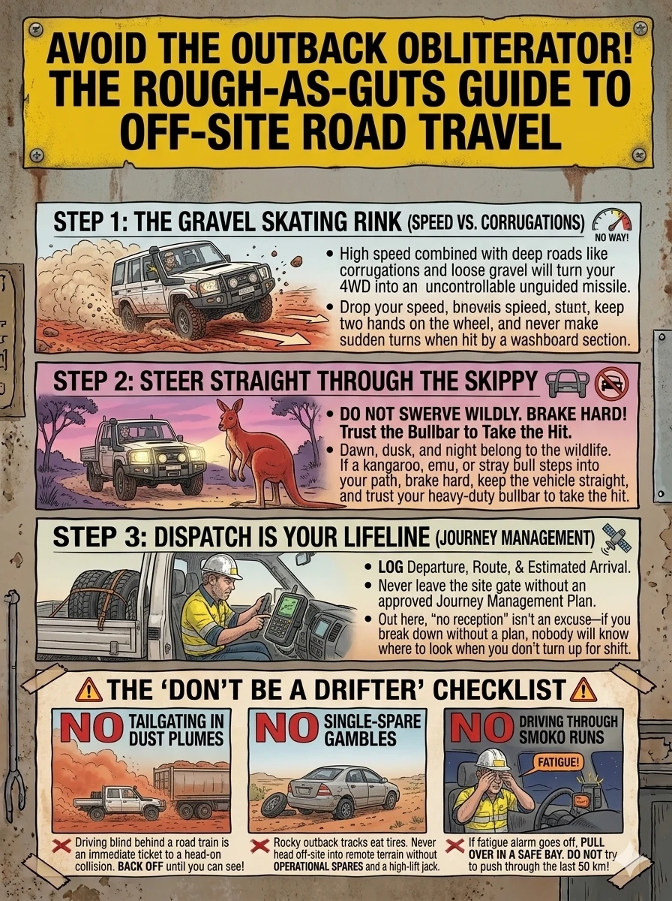

Optimised web copy shown. Exact original retained for provenance.
THE ROUGH-AS-GUTS GUIDE TO OFF-SITE ROAD TRAVEL
AVOID THE OUTBACK OBLITERATOR!
STEP 1 THE GRAVEL SKATING RINK (SPEED VS. CORRUGATIONS)
High speed combined with deep roads like corrugations and loose gravel will turn your 4WD into an uncontrollable unguided missile.
Drop your speed, [unclear], keep two hands on the wheel, and never make sudden turns when hit by a washboard section.
NO WAY!
Scene: White/cream 4WD wagon bounces over heavily corrugated red dirt, front wheel lifted, stones flying and a dust cloud behind; directional arrows across the track; speedometer icon.
STEP 2 STEER STRAIGHT THROUGH THE SKIPPY
DO NOT SWERVE WILDLY. BRAKE HARD! Trust the Bullbar to Take the Hit.
Dawn, dusk, and night belong to the wildlife. If a kangaroo, emu, or stray bull steps into your path, brake hard, keep the vehicle straight, and trust your heavy-duty bullbar to take the hit.
Scene: At pink dusk a bullbar-equipped tray-back ute approaches a large kangaroo in the road; sparse outback trees; car and crossed-out swerving-car icons.
STEP 3 DISPATCH IS YOUR LIFELINE (JOURNEY MANAGEMENT)
LOG Departure, Route, & Estimated Arrival.
Never leave the site gate without an approved Journey Management Plan.
Out here, “no reception” isn’t an excuse. If you break down without a plan, nobody will know where to look when you don’t turn up for shift.
Scene: Yellow hi-vis worker in white hard hat sits in ute cab using a handheld navigation/communications device; two spare tyres strapped upright in tray; satellite icon.
THE ‘DON’T BE A DRIFTER’ CHECKLIST
NO TAILGATING IN DUST PLUMES
Driving blind behind a road train is an immediate ticket to a head-on collision. BACK OFF until you can see!
Scene: Small light-coloured ute follows a large road-train trailer in dense orange dust; red X.
NO SINGLE-SPARE GAMBLES
Rocky outback tracks eat tires. Never head off-site into remote terrain without OPERATIONAL SPARES and a high-lift jack.
Scene: Silver sedan on barren track with one loose wheel lying beside it; red X.
NO DRIVING THROUGH SMOKO RUNS
If fatigue alarm goes off, PULL OVER IN A SAFE BAY. DO NOT try to push through the last 50 km!
Scene: Yellow hi-vis hard-hatted driver sits behind steering wheel rubbing eyes; orange FATIGUE! callout and steaming mug; red X.
Source defects and unclear lettering
- STEP 1 second bullet contains visibly garbled words between 'Drop your speed,' and 'keep two hands'.
- Source label 'DRIVING THROUGH SMOKO RUNS' accompanies a fatigue warning.
- Road travel and wildlife impact guidance is transcribed as supplied and unverified.
Image brief ingredients
Layout: steps_checklist
- Preserve separate depictions of corrugated-road loss of control, wildlife encounter, and journey communications.
- Source contains strong driving advice which requires later qualified review; do not treat catalogue text as validation.
The JSON download contains the full source record and a separate draft image prompt for each scene.
21Aussie extremes and wildlife
Outdoors and everyday humour+
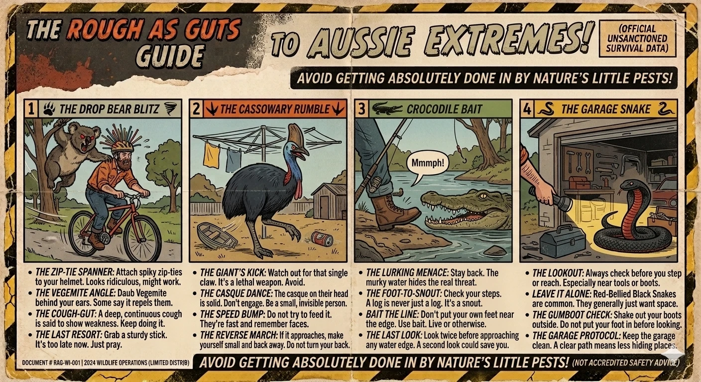

Optimised web copy shown. Exact original retained for provenance.
THE ROUGH AS GUTS GUIDE TO AUSSIE EXTREMES!
(OFFICIAL UNSANCTIONED SURVIVAL DATA) / AVOID GETTING ABSOLUTELY DONE IN BY NATURE’S LITTLE PESTS!
1 THE DROP BEAR BLITZ
THE ZIP-TIE SPANNER: Attach spiky zip-ties to your helmet. Looks ridiculous, might work.
THE VEGEMITE ANGLE: Daub Vegemite behind your ears. Some say it repels them.
THE COUGH-GUT: A deep, continuous cough is said to show weakness. Keep doing it.
THE LAST RESORT: Grab a sturdy stick. It’s too late now. Just pray.
Scene: Bearded cyclist in orange shirt rides a red bicycle wearing a helmet bristling with long cable ties; angry red-eyed koala lunges from adjacent tree toward his head; paw-print and whirl icons.
2 THE CASSOWARY RUMBLE
THE GIANT’S KICK: Watch out for that single claw. It’s a lethal weapon. Avoid.
THE CASQUE DANCE: The casque on their head is solid. Don’t engage. Be a small, invisible person.
THE SPEED BUMP: Do not try to feed it. They’re fast and remember faces.
THE REVERSE MARCH: If it approaches, make yourself small and back away. Do not turn your back.
Scene: Large black cassowary with blue neck, red wattle and tall casque lifts a clawed leg in a suburban yard; rotary clothesline with laundry, fence, shed, overturned basket and can; footprint icons.
3 CROCODILE BAIT
THE LURKING MENACE: Stay back. The murky water hides the real threat.
THE FOOT-TO-SNOUT: Check your steps. A log is never just a log. It’s a snout.
BAIT THE LINE: Don’t put your own feet near the edge. Use bait. Live or otherwise.
THE LAST LOOK: Look twice before approaching any water edge. A second look could save you.
Mmmph!
Scene: Crocodile opens toothy jaws beside muddy creek bank directly below a fisherman’s boot; only trouser leg, boot and held fishing rod are shown; water, rocks and tree roots; crocodile silhouette icon.
4 THE GARAGE SNAKE
THE LOOKOUT: Always check before you step or reach. Especially near tools or boots.
LEAVE IT ALONE: Red-Bellied Black Snakes are common. They generally just want space.
THE GUMBOOT CHECK: Shake out your boots outside. Do not put your foot in before looking.
THE GARAGE PROTOCOL: Keep the garage clean. A clear path means less hiding places.
Scene: Coiled black snake with red belly and raised cobra-like hood faces a torch beam at an open cluttered garage; person’s arm holding torch, tool case, loose wrench, wall tools, boxes and part of red car; snake icons.
Source footer
DOCUMENT # RAG-WI-001 | 2024 WILDLIFE OPERATIONS (LIMITED DISTRIB) / AVOID GETTING ABSOLUTELY DONE IN BY NATURE’S LITTLE PESTS! (NOT ACCREDITED SAFETY ADVICE)
Source defects and unclear lettering
- Includes fictional 'drop bear' scenario and folkloric/satirical claims alongside real wildlife.
- Snake is labelled Red-Bellied Black Snake in text but drawn with an exaggerated cobra-like hood.
- Footer explicitly states NOT ACCREDITED SAFETY ADVICE; all wildlife instructions are unverified source claims.
Image brief ingredients
Layout: four_strip
- Keep the four wildlife scenarios distinct and retain the original left-to-right order.
- Preserve the illustrated exaggeration as a source property; separate satire from factual wildlife guidance before using in safety material.
- Original footer and unsanctioned-data banner are part of the source.
The JSON download contains the full source record and a separate draft image prompt for each scene.
22Site bomb threats
Emergency response and health+
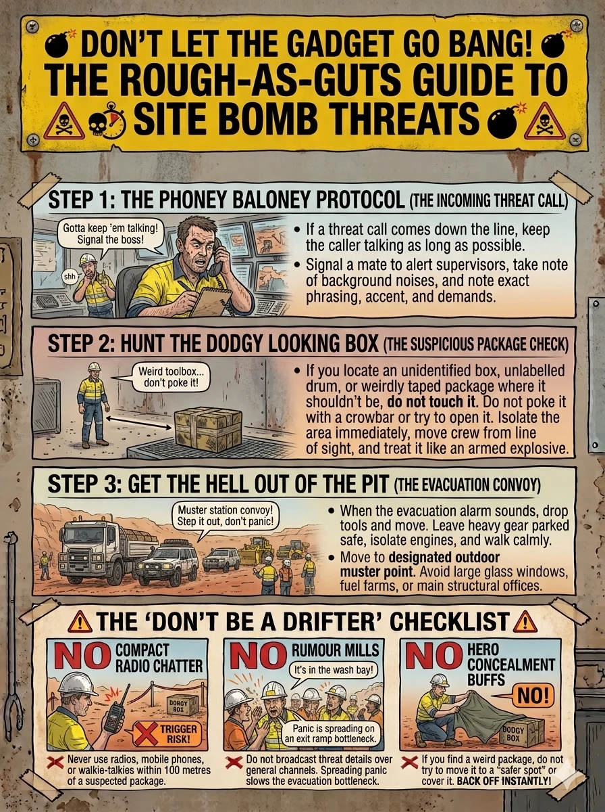

Optimised web copy shown. Exact original retained for provenance.
THE ROUGH-AS-GUTS GUIDE TO SITE BOMB THREATS
DON’T LET THE GADGET GO BANG!
STEP 1 THE PHONEY BALONEY PROTOCOL (THE INCOMING THREAT CALL)
If a threat call comes down the line, keep the caller talking as long as possible.
Signal a mate to alert supervisors, take note of background noises, and note exact phrasing, accent, and demands.
Gotta keep ’em talking! Signal the boss!
shh
Scene: Yellow hi-vis man at a control-room desk speaks into telephone while writing on notepad; colleague behind gestures/speaks quietly; multiple monitors, maps and keyboard.
STEP 2 HUNT THE DODGY LOOKING BOX (THE SUSPICIOUS PACKAGE CHECK)
If you locate an unidentified box, unlabelled drum, or weirdly taped package where it shouldn’t be, do not touch it. Do not poke it with a crowbar or try to open it. Isolate the area immediately, move crew from line of sight, and treat it like an armed explosive.
Weird toolbox... don’t poke it!
Scene: Hard-hatted yellow hi-vis worker stands apart from a taped cardboard box on industrial grating; double-headed arrow indicates separation; bare concrete wall and equipment cabinet.
STEP 3 GET THE HELL OUT OF THE PIT (THE EVACUATION CONVOY)
When the evacuation alarm sounds, drop tools and move. Leave heavy gear parked safe, isolate engines, and walk calmly.
Move to designated outdoor muster point. Avoid large glass windows, fuel farms, or main structural offices.
Muster station convoy! Step it out, don’t panic!
Scene: Open mine with large truck, 4WD vehicles and heavy equipment parked; small groups of hard-hatted workers on red dirt, some walking away toward foreground.
THE ‘DON’T BE A DRIFTER’ CHECKLIST
NO COMPACT RADIO CHATTER
Never use radios, mobile phones, or walkie-talkies within 100 metres of a suspected package.
Scene: Worker holding portable radio emits red signal zigzags near small labelled box; large red X and TRIGGER RISK! warning.
NO RUMOUR MILLS
Do not broadcast threat details over general channels. Spreading panic slows the evacuation bottleneck.
It’s in the wash bay!
Panic is spreading on an exit ramp bottleneck.
Scene: Cluster of hard-hatted workers in orange and yellow hi-vis talk anxiously.
NO HERO CONCEALMENT BUFFS
If you find a weird package, do not try to move it to a “safer spot” or cover it. BACK OFF INSTANTLY!
NO!
Scene: Kneeling hard-hatted yellow hi-vis man pulls dark fabric over box labelled DODGY BOX.
Source defects and unclear lettering
- Checklist heading 'DON’T BE A DRIFTER' appears inherited from road-travel theme.
- Checklist phrase 'COMPACT RADIO CHATTER' is as printed.
- Tiny label on package in first checklist picture is garbled/unclear.
- Bomb-threat and radio-distance instructions are unverified source claims.
Image brief ingredients
Layout: steps_checklist
- Keep threat-call recording, suspicious-box distance, and evacuation as separate source scenes.
- Do not add operational bomb-handling details; preserve visual emphasis on distancing and escalation.
- Source-specific safety claims require qualified review before reuse.
The JSON download contains the full source record and a separate draft image prompt for each scene.
23Chemical splashes and eyewash
Chemicals and exposure+
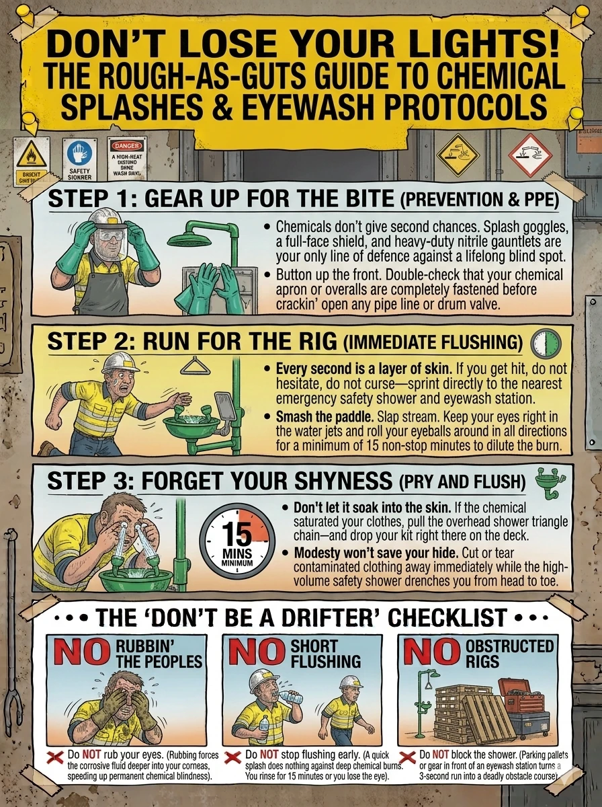

Optimised web copy shown. Exact original retained for provenance.
THE ROUGH-AS-GUTS GUIDE TO CHEMICAL SPLASHES & EYEWASH PROTOCOLS
DON’T LOSE YOUR LIGHTS!
STEP 1 GEAR UP FOR THE BITE (PREVENTION & PPE)
Chemicals don’t give second chances. Splash goggles, a full-face shield, and heavy-duty nitrile gauntlets are your only line of defence against a lifelong blind spot.
Button up the front. Double-check that your chemical apron or overalls are completely fastened before crackin’ open any pipe line or drum valve.
Scene: Yellow hi-vis hard-hatted worker adjusts clear face shield with long green gauntlets; dark apron, green emergency shower pipe/head, and spare green gloves on a box.
STEP 2 RUN FOR THE RIG (IMMEDIATE FLUSHING)
Every second is a layer of skin. If you get hit, do not hesitate, do not curse. Sprint directly to the nearest emergency safety shower and eyewash station.
Smash the paddle. Slap stream. Keep your eyes right in the water jets and roll your eyeballs around in all directions for a minimum of 15 non-stop minutes to dilute the burn.
Scene: Alarmed yellow hi-vis hard-hatted worker runs with one arm extended toward green plumbed eyewash bowl and activation paddle; overhead triangular shower pull handle; small clock icon.
STEP 3 FORGET YOUR SHYNESS (PRY AND FLUSH)
Don’t let it soak into the skin. If the chemical saturated your clothes, pull the overhead shower triangle chain and drop your kit right there on the deck.
Modesty won’t save your hide. Cut or tear contaminated clothing away immediately while the high-volume safety shower drenches you from head to toe.
15 MINS MINIMUM
Scene: Worker bends into a green eyewash bowl and holds eyelids open with fingers while two streams wash eyes; large fifteen-minute timer and small eyewash icon.
THE ‘DON’T BE A DRIFTER’ CHECKLIST
NO RUBBIN’ THE PEOPLES
Do NOT rub your eyes. (Rubbing forces the corrosive fluid deeper into your corneas, speeding up permanent chemical blindness).
Scene: Worker covers/rubs face with dirty thick gloves; red X.
NO SHORT FLUSHING
Do NOT stop flushing early. (A quick splash does nothing against deep chemical burns. You rinse for 15 minutes or you lose the eye).
Scene: Two yellow hi-vis hard-hatted men; one drinks bottled water while another walks away; red X.
NO OBSTRUCTED RIGS
Do NOT block the shower. (Parking pallets or gear in front of an eyewash station turns a 3-second run into a deadly obstacle course).
Scene: Emergency shower partly blocked by stacked timber pallets, leaning boards, wheeled case and red toolboxes; red X.
Source defects and unclear lettering
- Inherited checklist header 'DON’T BE A DRIFTER'.
- Source checklist label reads 'RUBBIN’ THE PEOPLES'.
- Source phrase 'Slap stream.' is printed in STEP 2.
- Small background safety signs contain garbled/unreadable words.
- Medical time limits and outcome claims are unverified source content.
Image brief ingredients
Layout: steps_checklist
- Keep eyewash rinsing posture, face protection, long gauntlets and obstructed-access example visually legible.
- Text about clothing removal is represented by an eyewash close-up, not by an undressing scene.
- Safety and medical claims require later qualified review; catalogue preserves source wording.
The JSON download contains the full source record and a separate draft image prompt for each scene.
24Crush hazards and pinch points
Tools and physical work+
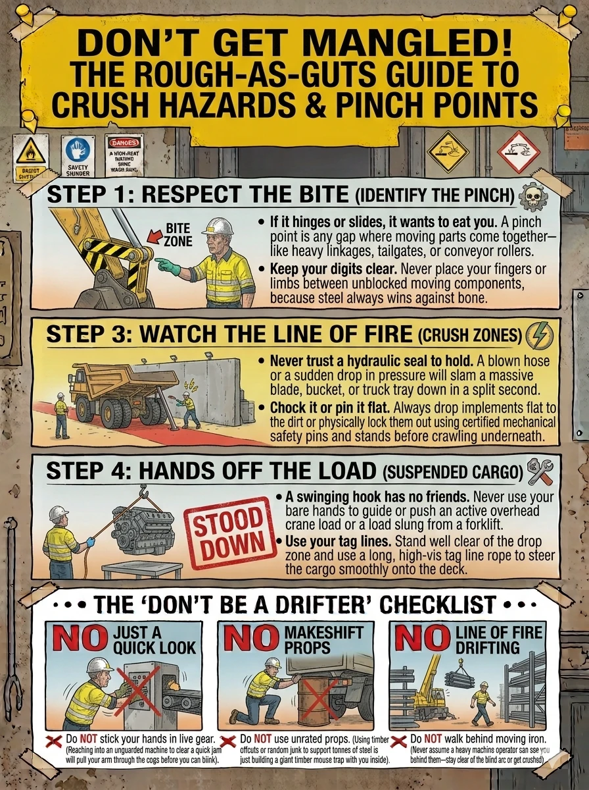

Optimised web copy shown. Exact original retained for provenance.
THE ROUGH-AS-GUTS GUIDE TO CRUSH HAZARDS & PINCH POINTS
DON’T GET MANGLED!
STEP 1 RESPECT THE BITE (IDENTIFY THE PINCH)
If it hinges or slides, it wants to eat you. A pinch point is any gap where moving parts come together, like heavy linkages, tailgates, or conveyor rollers.
Keep your digits clear. Never place your fingers or limbs between unblocked moving components, because steel always wins against bone.
BITE ZONE
Scene: Yellow hi-vis worker in hard hat and green gloves points toward excavator linkage; black/yellow striped pivot guard and red arrow identify pinch zone; skull icon.
STEP 3 WATCH THE LINE OF FIRE (CRUSH ZONES)
Never trust a hydraulic seal to hold. A blown hose or a sudden drop in pressure will slam a massive blade, bucket, or truck tray down in a split second.
Chock it or pin it flat. Always drop implements flat to the dirt or physically lock them out using certified mechanical safety pins and stands before crawling underneath.
Scene: Large mine haul truck beside tall concrete wall; a worker occupies narrow gap near rear wheel/wall while another stands away; red ground stripe marks line-of-fire area; leaning stand/prop at truck; lightning icon.
STEP 4 HANDS OFF THE LOAD (SUSPENDED CARGO)
A swinging hook has no friends. Never use your bare hands to guide or push an active overhead crane load or a load slung from a forklift.
Use your tag lines. Stand well clear of the drop zone and use a long, high-vis tag line rope to steer the cargo smoothly onto the deck.
STOOD DOWN
Scene: Hard-hatted worker in yellow hi-vis and blue gloves holds a rope attached to a suspended engine block above a low platform; overhead hook/sling; large red STOOD DOWN stamp and crossed-tool icon.
THE ‘DON’T BE A DRIFTER’ CHECKLIST
NO JUST A QUICK LOOK
Do NOT stick your hands in live gear. (Reaching into an unguarded machine to clear a quick jam will pull your arm through the cogs before you can blink).
Scene: Worker reaches into industrial machine/conveyor opening, overlaid with red X.
NO MAKESHIFT PROPS
Do NOT use unrated props. (Using timber offcuts or random junk to support tonnes of steel is just building a giant timber mouse trap with you inside).
Scene: Kneeling worker reaches under raised truck body supported with a rusty drum/wood; large red X over support.
NO LINE OF FIRE DRIFTING
Do NOT walk behind moving iron. (Never assume a heavy machine operator can see you behind them. Stay clear of the blind arc or get crushed).
Scene: Worker walks near crane carrying suspended stack of metal between storage racks.
Source defects and unclear lettering
- Panel numbering skips STEP 2 and begins 1, 3, 4.
- Inherited checklist heading 'DON’T BE A DRIFTER'.
- Suspended-cargo panel includes unexplained STOOD DOWN stamp.
- Small background signs contain garbled words.
- Safety instructions are unverified source material.
Image brief ingredients
Layout: steps_checklist
- Preserve pinch-gap, vehicle/wall crush zone and suspended-load tag-line as distinct compositions.
- For prompt accuracy identify red crosses/stamps as warning overlays rather than physical props.
- Retain source numbering when documenting; any renumbering belongs to later revision.
The JSON download contains the full source record and a separate draft image prompt for each scene.
25Dealing with the safety representative
Camp and workplace behaviour+
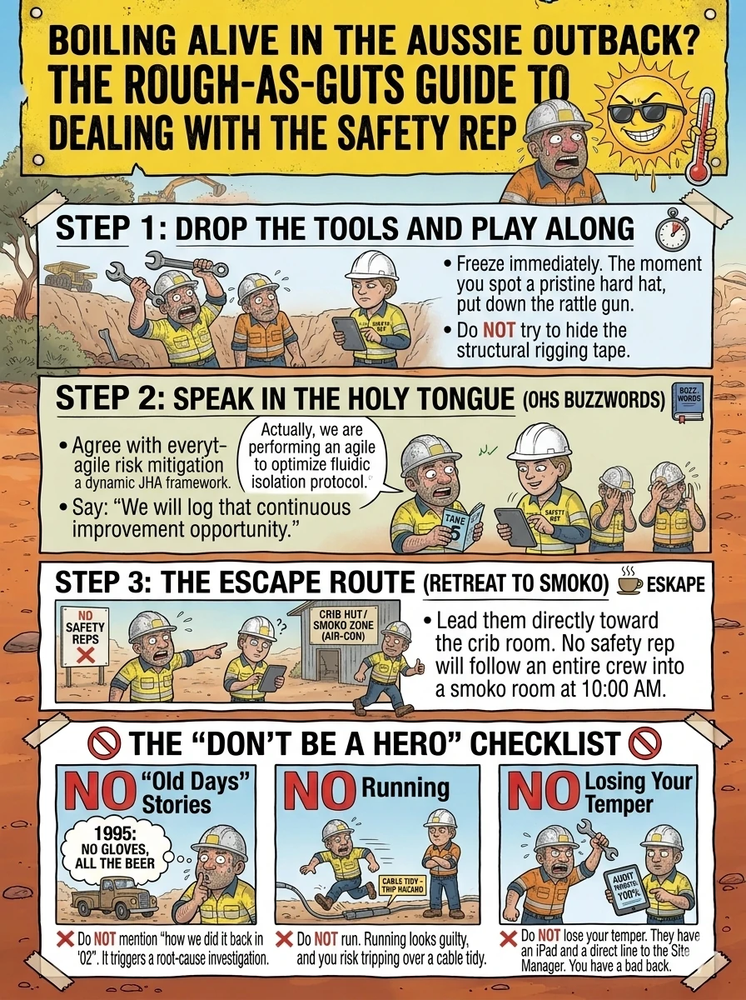

Optimised web copy shown. Exact original retained for provenance.
THE ROUGH-AS-GUTS GUIDE TO DEALING WITH THE SAFETY REP
BOILING ALIVE IN THE AUSSIE OUTBACK?
STEP 1 DROP THE TOOLS AND PLAY ALONG
Freeze immediately. The moment you spot a pristine hard hat, put down the rattle gun.
Do NOT try to hide the structural rigging tape.
Scene: Alarmed yellow hi-vis worker holds two spanners above head, orange hi-vis mate looks worried, clean white-hard-hatted SAFETY REP in yellow hi-vis reads tablet; mine excavation and haul truck behind; stopwatch icon.
STEP 2 SPEAK IN THE HOLY TONGUE (OHS BUZZWORDS)
Agree with everyt- agile risk mitigation a dynamic JHA framework.
Say: “We will log that continuous improvement opportunity.”
BOZZ. WORDS
Actually, we are performing an agile to optimize fluidic isolation protocol.
Scene: Nervous worker holds small booklet with garbled TAKE 5-like label while speaking to smiling clean safety representative holding tablet; two colleagues cover faces behind; green ticks; small buzzwords-book icon.
STEP 3 THE ESCAPE ROUTE (RETREAT TO SMOKO)
Lead them directly toward the crib room. No safety rep will follow an entire crew into a smoko room at 10:00 AM.
ESKAPE
ND SAFETY REPS
CRIB HUT/ SMOKO ZONE (AIR-CON)
Scene: Worker points toward crib hut, tablet-carrying colleague looks confused, third worker walks toward hut giving thumbs-up; sign with red cross reads ND SAFETY REPS; coffee cup icon.
THE “DON’T BE A HERO” CHECKLIST
NO “Old Days” Stories
Do NOT mention “how we did it back in ’02”. It triggers a root-cause investigation.
1995: NO GLOVES, ALL THE BEER
Scene: Worker holds finger to lips with thought cloud showing text; small brown ute behind.
NO Running
Do NOT run. Running looks guilty, and you risk tripping over a cable tidy.
Scene: Yellow hi-vis worker runs/trips over cable or hose near low cable tidy; orange-shirted hard-hatted supervisor stands with arms crossed; tiny sign text is garbled.
NO Losing Your Temper
Do NOT lose your temper. They have an iPad and a direct line to the Site Manager. You have a bad back.
Scene: Angry orange hi-vis worker raises a spanner; safety representative points at tablet bearing garbled audit/report words.
Source defects and unclear lettering
- Top kicker about boiling alive is mismatched to safety-representative topic.
- First STEP 2 bullet is grammatically garbled, transcribed as visible.
- Speech bubble 'performing an agile to optimize fluidic isolation protocol' is as printed.
- Icon says BOZZ. WORDS and STEP 3 icon says ESKAPE; sign appears ND SAFETY REPS.
- Booklet, cable-tidy sign and tablet have garbled miniature lettering.
Image brief ingredients
Layout: steps_checklist
- This is workplace satire about reactions to a safety representative, not a factual procedure.
- Recurring visual contrast: grubby anxious workers versus clean calm safety representative with tablet.
- Do not silently repair source text in a faithful inventory; revise and approve wording separately.
The JSON download contains the full source record and a separate draft image prompt for each scene.
26Day sleep and fatigue: mock procedure notice
Camp and workplace behaviour+
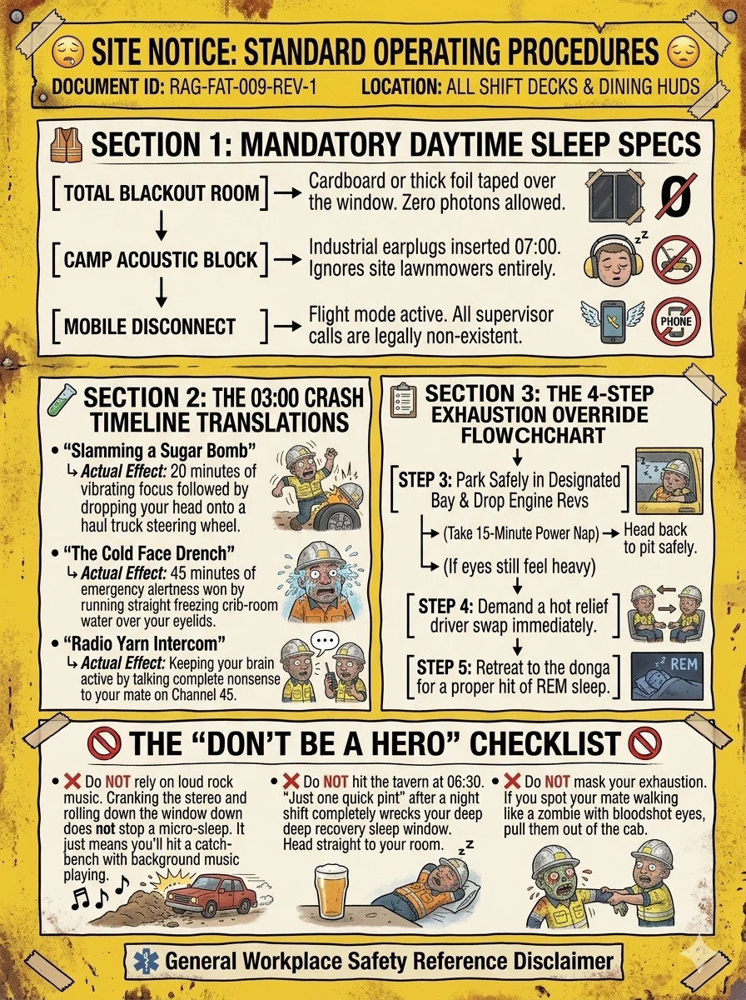

Optimised web copy shown. Exact original retained for provenance.
SITE NOTICE: STANDARD OPERATING PROCEDURES
DOCUMENT ID: RAG-FAT-009-REV-1 / LOCATION: ALL SHIFT DECKS & DINING HUDS
SECTION 1 MANDATORY DAYTIME SLEEP SPECS
[TOTAL BLACKOUT ROOM] → Cardboard or thick foil taped over the window. Zero photons allowed.
[CAMP ACOUSTIC BLOCK] → Industrial earplugs inserted 07:00. Ignores site lawnmowers entirely.
[MOBILE DISCONNECT] → Flight mode active. All supervisor calls are legally non-existent.
Scene: Three vertically linked bracketed labels with rightward arrows; icons of taped blackout window and crossed zero, sleeping head wearing earmuffs and crossed mower, winged mobile and crossed PHONE symbol.
SECTION 2 THE 03:00 CRASH TIMELINE TRANSLATIONS
“Slamming a Sugar Bomb” ↳ Actual Effect: 20 minutes of vibrating focus followed by dropping your head onto a haul truck steering wheel.
“The Cold Face Drench” ↳ Actual Effect: 45 minutes of emergency alertness won by running straight freezing crib-room water over your eyelids.
“Radio Yarn Intercom” ↳ Actual Effect: Keeping your brain active by talking complete nonsense to your mate on Channel 45.
Scene: Three small vignettes: startled/jittery worker next to large wheel; wide-eyed orange hi-vis worker drenched with splashing blue water; two yellow hi-vis workers talk over handheld radio with ellipsis bubble.
SECTION 3 THE 4-STEP EXHAUSTION OVERRIDE FLOWCHART
STEP 3: Park Safely in Designated Bay & Drop Engine Revs
(Take 15-Minute Power Nap) → Head back to pit safely.
(If eyes still feel heavy)
STEP 4: Demand a hot relief driver swap immediately.
STEP 5: Retreat to the donga for a proper hit of REM sleep.
Scene: Downward-arrow flowchart begins STEP 3; branches after park step to nap/safe return or continued heaviness; small worker sleeping in cab, two seated hard-hatted workers swapping, and REM-labelled pillow/bed icon.
THE “DON’T BE A HERO” CHECKLIST
Do NOT rely on loud rock music.
Cranking the stereo and rolling down the window down does not stop a micro-sleep. It just means you’ll hit a catch-bench with background music playing.
Scene: Red car moving toward/riding a dirt mound with music notes.
Do NOT hit the tavern at 06:30.
“Just one quick pint” after a night shift completely wrecks your deep deep recovery sleep window. Head straight to your room.
Scene: Beer glass next to orange hi-vis worker sleeping in bed, Z marks.
Do NOT mask your exhaustion.
If you spot your mate walking like a zombie with bloodshot eyes, pull them out of the cab.
Scene: Pale green-faced bloodshot-eyed worker with arms outstretched; colleague grips/pulls his arm.
Source footer
General Workplace Safety Reference Disclaimer
Source defects and unclear lettering
- LOCATION uses 'DINING HUDS' (as printed).
- SECTION 3 says 4-STEP but shows only STEP 3, STEP 4, STEP 5.
- Source repeats 'deep deep' and 'rolling down the window down'.
- Footer is a disclaimer heading without visible explanatory disclaimer text.
- Claims concerning alertness, fatigue, sleep and legal non-existence of calls are unverified and include satire.
Image brief ingredients
Layout: mock_notice
- Maintain graph structure and conditional arrows in the exhaustion flowchart; it is not a simple list of three instructions.
- Keep each of the three crash-method illustrations attached to its matching quoted phrase.
- This is source transcription; do not interpret specific claimed durations or remedies as checked safety advice.
The JSON download contains the full source record and a separate draft image prompt for each scene.
27General personal protective equipment
Tools and physical work+
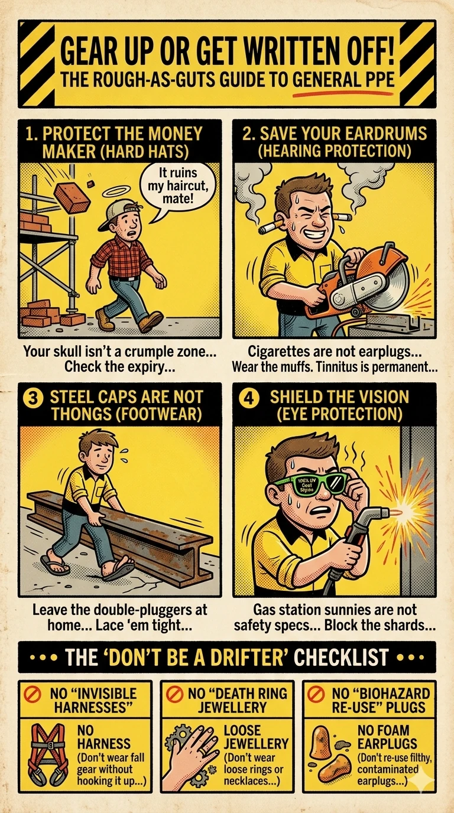

Optimised web copy shown. Exact original retained for provenance.
THE ROUGH-AS-GUTS GUIDE TO GENERAL PPE
GEAR UP OR GET WRITTEN OFF!
1. PROTECT THE MONEY MAKER (HARD HATS)
Your skull isn’t a crumple zone... Check the expiry...
It ruins my haircut, mate!
Scene: Man in red checked shirt, jeans and backwards cap walks below scaffold as a brick falls toward his unprotected head; halo-like impact ring above head; bricks stacked at ground.
2. SAVE YOUR EARDRUMS (HEARING PROTECTION)
Cigarettes are not earplugs... Wear the muffs. Tinnitus is permanent...
Scene: Sweating yellow-shirted man operates orange abrasive cut-off saw without earmuffs; cigarettes protrude from both ears, smoking; sparks from metal on saw bed.
3 STEEL CAPS ARE NOT THONGS (FOOTWEAR)
Leave the double-pluggers at home... Lace ’em tight...
Scene: Yellow-shirted man in jeans and rubber thongs carries a long rusty steel I-beam low beside exposed toes.
4 SHIELD THE VISION (EYE PROTECTION)
Gas station sunnies are not safety specs... Block the shards...
100% UV Cool Styles
Scene: Sweating yellow-shirted man holds torch-like cutting tool toward upright steel; sparks fly near his face; he adjusts green-framed fashion sunglasses bearing small printed slogan.
THE ‘DON’T BE A DRIFTER’ CHECKLIST
NO “INVISIBLE HARNESSES”
NO HARNESS (Don’t wear fall gear without hooking it up...)
Scene: Isolated red/black full-body harness illustration.
NO “DEATH RING JEWELLERY
LOOSE JEWELLERY (Don’t wear loose rings or necklaces...)
Scene: Hand with rings beside yellow toothed gears.
NO “BIOHAZARD RE-USE” PLUGS
NO FOAM EARPLUGS (Don’t re-use filthy, contaminated earplugs...)
Scene: Two dirty orange foam earplugs, grime specks.
Source defects and unclear lettering
- Inherited checklist header 'DON’T BE A DRIFTER'.
- Second checklist title has opening quotation mark without a clear closing quotation mark.
- The third checklist body label 'NO FOAM EARPLUGS' is broader than its parenthetical warning against contaminated reuse.
- Illustrated eye-protection scenario uses an ambiguous torch-like cutting tool; do not infer exact tool model.
- Safety claims are unverified source material.
Image brief ingredients
Layout: four_grid
- Original visual joke is incorrect substitute equipment: cap, smoking cigarettes in ears, thongs, fashion sunglasses.
- Keep wrong-behaviour pictures paired with corrective captions and warning context.
- Avoid generating cigarettes as recommended hearing protection or other bad examples as endorsed actions.
The JSON download contains the full source record and a separate draft image prompt for each scene.
28Backyard barbecues
Outdoors and everyday humour+
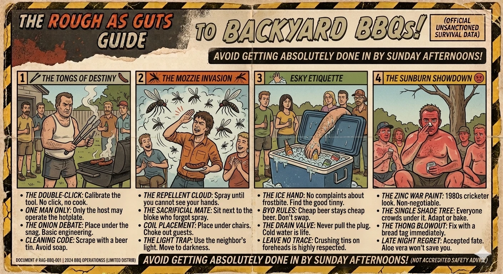

Optimised web copy shown. Exact original retained for provenance.
THE ROUGH AS GUTS GUIDE TO BACKYARD BBQs!
(OFFICIAL UNSANCTIONED SURVIVAL DATA) / AVOID GETTING ABSOLUTELY DONE IN BY SUNDAY AFTERNOONS!
1 THE TONGS OF DESTINY
THE DOUBLE-CLICK: Calibrate the tool. No click, no cook.
ONE MAN ONLY: Only the host may operate the hotplate.
THE ONION DEBATE: Place under the snag. Basic engineering.
CLEANING CODE: Scrape with a beer tin. Avoid soap.
Scene: Stocky man in white singlet and shorts holds barbecue tongs beside smoking open black barbecue with sausages; four male guests stand behind holding drinks in fenced backyard.
2 THE MOZZIE INVASION
THE REPELLENT CLOUD: Spray until you cannot see your hands.
THE SACRIFICIAL MATE: Sit next to the bloke who forgot spray.
COIL PLACEMENT: Place under chairs. Choke out guests.
THE LIGHT TRAP: Use the neighbor’s light. Move to darkness.
Scene: Orange-shirted man holding plate with sausage swats at a swarm of exaggerated giant mosquitoes; two guests laugh/watch on either side; mosquito silhouettes in header.
3 ESKY ETIQUETTE
THE ICE HAND: No complaints about frostbite. Find the good tinny.
BYO RULES: Cheap beer stays cheap beer. Don’t swap.
THE DRAIN VALVE: Never pull the plug. Cold water is life.
LEAVE NO TRACE: Crushing tins on foreheads is highly respected.
Scene: Large blue cooler with raised lid full of ice and assorted cans/bottles; a bare hairy arm reaches down into ice; five backyard guests with drinks stand behind.
4 THE SUNBURN SHOWDOWN
THE ZINC WAR PAINT: 1980s cricketer look. Non-negotiable.
THE SINGLE SHADE TREE: Everyone crowds under it. Adapt or bake.
THE THONG BLOWOUT: Fix with a bread tag immediately.
LATE NIGHT REGRET: Accepted fate. Aloe vera won’t save you.
Scene: Bare-chested heavily sunburned red man seated under a tree holds a can and touches nose; several other sunburned people crowd behind; angry-red-face icon.
Source footer
DOCUMENT # RAG-BBQ-001 | 2024 BBQ OPERATIONS (LIMITED DISTRIB) / AVOID GETTING ABSOLUTELY DONE IN BY SUNDAY AFTERNOONS! (NOT ACCREDITED SAFETY ADVICE)
Source defects and unclear lettering
- Uses 'neighbor’s' US spelling in source.
- Humorous practices include potentially unsafe or unhygienic behaviours; footer explicitly says NOT ACCREDITED SAFETY ADVICE.
- Esky image shows an isolated arm entering from top; owner’s body is outside frame.
Image brief ingredients
Layout: four_strip
- Keep recognisable Australian backyard barbecue motifs: snags, tongs, esky, tinnies, thongs, harsh sun.
- Separate visual humour from recommendations; source is satirical and claims are unverified.
- Maintain original left-to-right panel order and footer.
The JSON download contains the full source record and a separate draft image prompt for each scene.
29Working at heights
Tools and physical work+
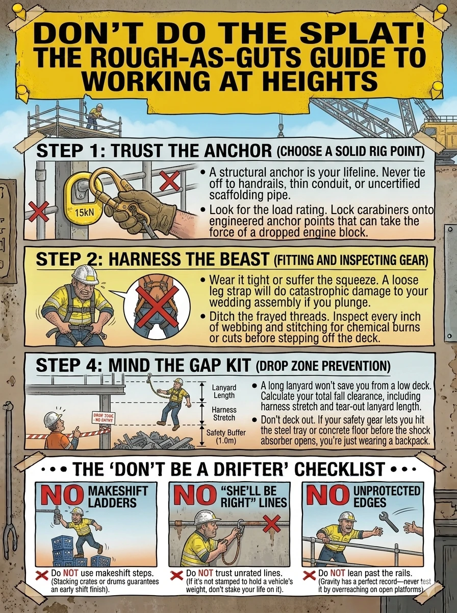

Optimised web copy shown. Exact original retained for provenance.
THE ROUGH-AS-GUTS GUIDE TO WORKING AT HEIGHTS
DON’T DO THE SPLAT!
STEP 1 TRUST THE ANCHOR (CHOOSE A SOLID RIG POINT)
A structural anchor is your lifeline. Never tie off to handrails, thin conduit, or uncertified scaffolding pipe.
Look for the load rating. Lock carabiners onto engineered anchor points that can take the force of a dropped engine block.
15kN
Scene: Close-up gloved hand clips large gold carabiner to gold anchor ring on a vertical structural post; ring marked 15kN; adjacent thin rail/conduit alternatives marked red X.
STEP 2 HARNESS THE BEAST (FITTING AND INSPECTING GEAR)
Wear it tight or suffer the squeeze. A loose leg strap will do catastrophic damage to your wedding assembly if you plunge.
Ditch the frayed threads. Inspect every inch of webbing and stitching for chemical burns or cuts before stepping off the deck.
Scene: Yellow hi-vis hard-hatted worker adjusts harness straps at waist/thighs; circular inset shows rear/seat view of badly fitting harness with large red X.
STEP 4 MIND THE GAP KIT (DROP ZONE PREVENTION)
A long lanyard won’t save you from a low deck. Calculate your total fall clearance, including harness stretch and tear-out lanyard length.
Don’t deck out. If your safety gear lets you hit the steel tray or concrete floor before the shock absorber opens, you’re just wearing a backpack.
Lanyard Length
Harness Stretch
Safety Buffer (1.0m)
Scene: Diagram shows suspended harnessed worker below platform with lanyard above; vertical double-headed arrows label lanyard length, harness stretch and 1.0m safety buffer over scrap metal; observer behind striped barrier; small exclusion sign has garbled wording.
THE ‘DON’T BE A DRIFTER’ CHECKLIST
NO MAKESHIFT LADDERS
Do NOT use makeshift steps. (Stacking crates or drums guarantees an early shift finish).
Scene: Worker steps between stacked blue crates while reaching toward overhead pipe.
NO “SHE’LL BE RIGHT” LINES
Do NOT trust unrated lines. (If it’s not stamped to hold a vehicle’s weight, don’t stake your life on it).
Scene: Worker clips or ties rope/lanyard onto thin rusty horizontal pipe; red X.
NO UNPROTECTED EDGES
Do NOT lean past the rails. (Gravity has a perfect record. Never test it by overreaching on open platforms).
Scene: Worker leans outward over scaffold rail reaching for airborne spanner and another person’s off-frame hand.
Source defects and unclear lettering
- Panel numbering skips STEP 3: source shows STEP 1, STEP 2, STEP 4.
- Inherited checklist header 'DON’T BE A DRIFTER'.
- Small exclusion sign in STEP 4 is garbled.
- Source uses force/weight analogies and numeric clearance/anchor labels without verified context; all safety claims are unverified.
Image brief ingredients
Layout: steps_checklist
- Preserve anchor close-up, harness-fitting close-up and fall-clearance diagram as distinct information types.
- Make diagram labels and arrow endpoints explicit when redrawing; do not invent missing calculations.
- Source fall protection statements are not approved specifications.
The JSON download contains the full source record and a separate draft image prompt for each scene.
30Isolation and lock-out tag-out
Tools and physical work+
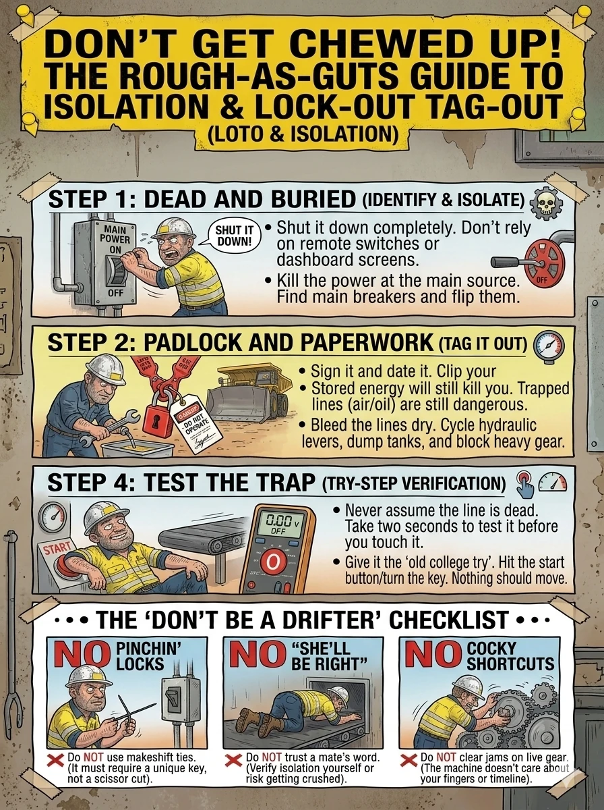

Optimised web copy shown. Exact original retained for provenance.
THE ROUGH-AS-GUTS GUIDE TO ISOLATION & LOCK-OUT TAG-OUT (LOTO & ISOLATION)
DON’T GET CHEWED UP!
STEP 1 DEAD AND BURIED (IDENTIFY & ISOLATE)
Shut it down completely. Don’t rely on remote switches or dashboard screens.
Kill the power at the main source. Find main breakers and flip them.
MAIN POWER ON OFF
OFF
SHUT IT DOWN!
Scene: Yellow hi-vis hard-hatted man moves a large wall-mounted main-power isolator lever; separate red handwheel valve on pipe marked OFF; skull/gear icon.
STEP 2 PADLOCK AND PAPERWORK (TAG IT OUT)
Sign it and date it. Clip your
Stored energy will still kill you. Trapped lines (air/oil) are still dangerous.
Bleed the lines dry. Cycle hydraulic levers, dump tanks, and block heavy gear.
DANGER DO NOT OPERATE EQUIPMENT
Scene: Blue-overalled mechanic in hard hat uses spanners at work surface; oversized red padlock and multi-lock hasp with red tags and signed white danger tag; mine loader behind; timer icon.
STEP 4 TEST THE TRAP (TRY-STEP VERIFICATION)
Never assume the line is dead. Take two seconds to test it before you touch it.
Give it the ‘old college try’. Hit the start button/turn the key. Nothing should move.
START
0.00 V
OFF
Scene: Smiling yellow hi-vis man reclines by START button and stopped conveyor; large digital multimeter beside him with zero-voltage-style display; small push-button and meter icons.
THE ‘DON’T BE A DRIFTER’ CHECKLIST
NO PINCHIN’ LOCKS
Do NOT use makeshift ties. (It must require a unique key, not a scissor cut).
Scene: Worker holds scissors toward thin tie/strapping in front of an isolator box.
NO “SHE’LL BE RIGHT”
Do NOT trust a mate’s word. (Verify isolation yourself or risk getting crushed).
Scene: Worker crawls headfirst into open machinery housing beside conveyor.
NO COCKY SHORTCUTS
Do NOT clear jams on live gear. (The machine doesn’t care about your fingers or timeline).
Scene: Worker reaches hands toward large exposed intermeshing gears and chain.
Source defects and unclear lettering
- STEP 2 first bullet ends abruptly at 'Clip your'.
- Source panel numbering skips STEP 3.
- Inherited checklist header 'DON’T BE A DRIFTER'.
- Small lettering on red lockout tags is garbled/unreadable.
- Source 'two seconds' testing language and isolation procedures are unverified.
Image brief ingredients
Layout: steps_checklist
- Keep actual isolator, lock/hasp/tag, and verification scenes separate; exact electrical/hydraulic details are not established by this image.
- Prompt overlays such as meter displays and signed tags should be typeset separately for accuracy.
- All source safety directions remain unverified.
The JSON download contains the full source record and a separate draft image prompt for each scene.
31Mine-site vehicle interactions
Vehicles and travel+
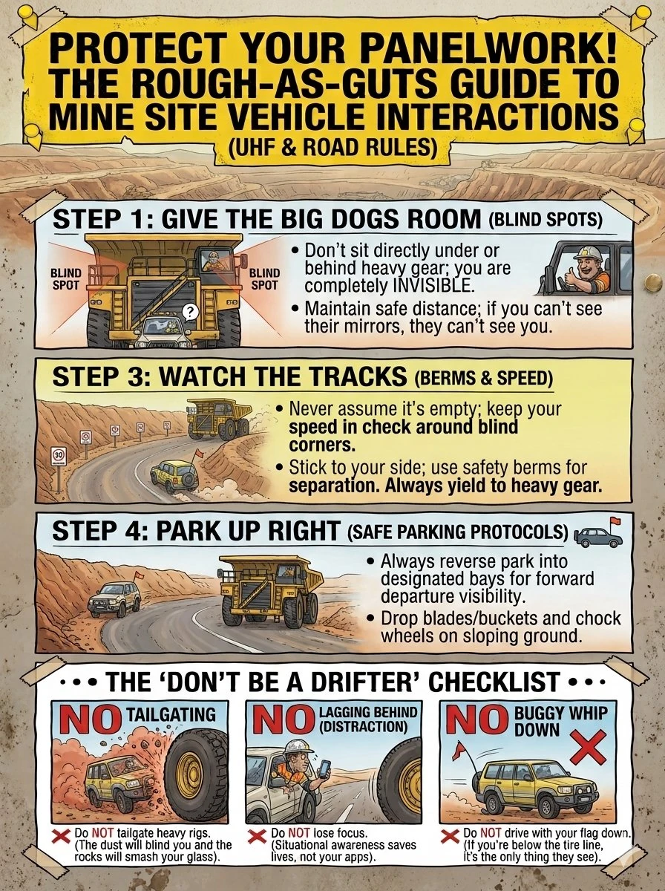

Optimised web copy shown. Exact original retained for provenance.
THE ROUGH-AS-GUTS GUIDE TO MINE SITE VEHICLE INTERACTIONS (UHF & ROAD RULES)
PROTECT YOUR PANELWORK!
STEP 1 GIVE THE BIG DOGS ROOM (BLIND SPOTS)
Don’t sit directly under or behind heavy gear; you are completely INVISIBLE.
Maintain safe distance; if you can’t see their mirrors, they can’t see you.
BLIND SPOT
BLIND SPOT
?
Scene: Front view of massive yellow haul truck dwarfs a small light vehicle immediately below radiator; broad red triangular blind-spot zones to either side; truck operator visible high in cab; inset light-vehicle driver gestures from window.
STEP 3 WATCH THE TRACKS (BERMS & SPEED)
Never assume it’s empty; keep your speed in check around blind corners.
Stick to your side; use safety berms for separation. Always yield to heavy gear.
Scene: Yellow/green light 4WD with red whip flag rounds a winding mine road beneath a haul truck around the next bend; earth berms, dust and repeated speed signs; nearest appears 50.
STEP 4 PARK UP RIGHT (SAFE PARKING PROTOCOLS)
Always reverse park into designated bays for forward departure visibility.
Drop blades/buckets and chock wheels on sloping ground.
Scene: Small light-coloured ute/4WD with flag parked on left roadside beside mine wall while large haul truck occupies curved road; small car-and-flag icon.
THE ‘DON’T BE A DRIFTER’ CHECKLIST
NO TAILGATING
Do NOT tailgate heavy rigs. (The dust will blind you and the rocks will smash your glass).
Scene: Small yellow 4WD follows close beside enormous heavy-truck tyre, engulfed in orange dust and flying rocks.
NO LAGGING BEHIND (DISTRACTION)
Do NOT lose focus. (Situational awareness saves lives, not your apps).
Scene: Orange hi-vis hard-hatted light-vehicle driver leans out open window looking at smartphone while huge haul-truck wheel is close ahead.
NO BUGGY WHIP DOWN
Do NOT drive with your flag down. (If you’re below the tire line, it’s the only thing they see).
Scene: Yellow/green 4WD with red whip flag, motion/dust, large red X over upper right.
Source defects and unclear lettering
- STEP 2 is absent; panels numbered STEP 1, STEP 3, STEP 4.
- Title advertises UHF but no readable UHF/radio procedure appears in panels.
- Checklist inherited header 'DON’T BE A DRIFTER'.
- BUGGY WHIP DOWN picture visibly includes a raised red flag despite its warning label.
- Safe parking text is paired with roadside vehicles rather than a clear designated-bay reverse-park diagram.
- Safety claims are unverified.
Image brief ingredients
Layout: steps_checklist
- Scale difference between light vehicles and haul trucks is central to visual meaning.
- Explicitly define direction of travel, blind spots, separation and flag state when redrawing; original pictures are not always consistent with captions.
- Do not add site-specific traffic/UHF rules absent from source.
The JSON download contains the full source record and a separate draft image prompt for each scene.
32Football finals at work
Camp and workplace behaviour+
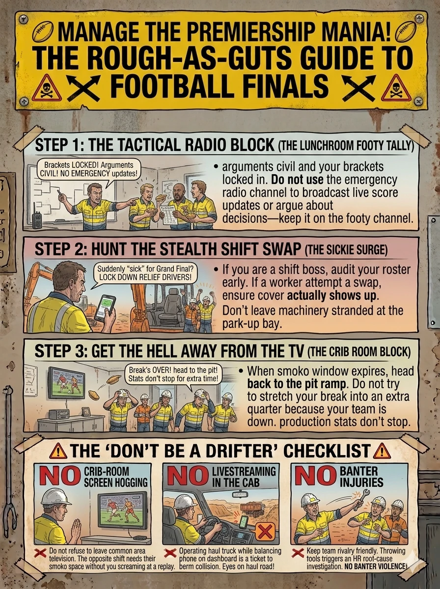

Optimised web copy shown. Exact original retained for provenance.
THE ROUGH-AS-GUTS GUIDE TO FOOTBALL FINALS
MANAGE THE PREMIERSHIP MANIA!
STEP 1 THE TACTICAL RADIO BLOCK (THE LUNCHROOM FOOTY TALLY)
arguments civil and your brackets locked in. Do not use the emergency radio channel to broadcast live score updates or argue about decisions. Keep it on the footy channel.
Brackets LOCKED! Arguments CIVIL! NO EMERGENCY updates!
Scene: Four yellow hi-vis men argue/discuss in lunchroom; one holds marker and points across group near whiteboard, one holds paper bracket/results sheet; handheld radio on bench.
STEP 2 HUNT THE STEALTH SHIFT SWAP (THE SICKIE SURGE)
If you are a shift boss, audit your roster early. If a worker attempt a swap, ensure cover actually shows up. Don’t leave machinery stranded at the park-up bay.
Suddenly “sick” for Grand Final? LOCK DOWN RELIEF DRIVERS!
Scene: Yellow hi-vis supervisor seen from rear/side holds smartphone with green message display; parked excavator with empty seat behind; two hard-hatted workers beside it wave/gesture.
STEP 3 GET THE HELL AWAY FROM THE TV (THE CRIB ROOM BLOCK)
When smoko window expires, head back to the pit ramp. Do not try to stretch your break into an extra quarter because your team is down. production stats don’t stop.
Break’s OVER! head to the pit! Stats don’t stop for extra time!
Scene: Five hi-vis hard-hatted workers in crib room below wall-mounted football TV, several distressed/exasperated with hands on heads; food rolls/pies drawn airborne; bench radio below screen.
THE ‘DON’T BE A DRIFTER’ CHECKLIST
NO CRIB-ROOM SCREEN HOGGING
Do not refuse to leave common area television. The opposite shift needs their smoko space without you screaming at a replay.
Scene: Hard-hatted worker faces wall football TV with hands pressed together.
NO LIVESTREAMING IN THE CAB
Operating haul truck while balancing phone on dashboard is a ticket to berm collision. Eyes on haul road!
Scene: Truck driver at steering wheel with smartphone propped on dashboard; haul road and mine truck ahead; large red X.
NO BANTER INJURIES
Keep team rivalry friendly. Throwing tools triggers an HR root-cause investigation. NO BANTER VIOLENCE!
Scene: Yellow hi-vis worker raises/throws spanner toward startled colleagues in yellow/orange hi-vis.
Source defects and unclear lettering
- STEP 1 text begins abruptly with lowercase 'arguments civil' without an introductory verb.
- STEP 2 uses 'If a worker attempt a swap' (source grammar).
- STEP 3 has lowercase 'production' after a full stop.
- Inherited checklist heading 'DON’T BE A DRIFTER'.
- Satirical workforce/football guidance includes safety statements that remain unverified.
Image brief ingredients
Layout: steps_checklist
- Keep football enthusiasm, roster coverage and returning from break as distinct source situations.
- Satire targets distraction, rivalries and absenteeism; wrong-behaviour pictures need their warning context.
- Preserve source truncations in transcription and separately revise copy for future image prompts.
The JSON download contains the full source record and a separate draft image prompt for each scene.
33Dehydration in Central Queensland
Emergency response and health+
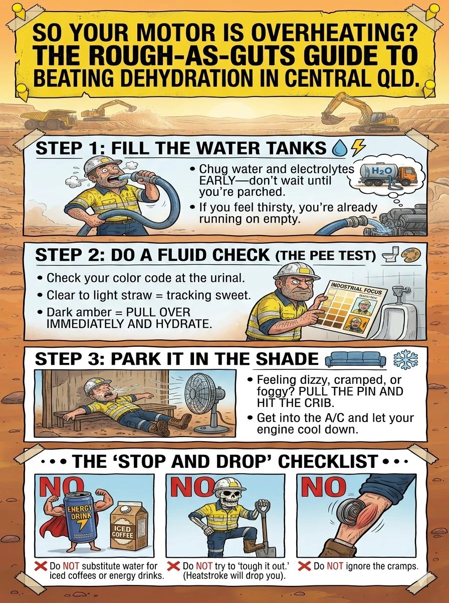

Optimised web copy shown. Exact original retained for provenance.
SO YOUR MOTOR IS OVERHEATING? THE ROUGH-AS-GUTS GUIDE TO BEATING DEHYDRATION IN CENTRAL QLD.
STEP 1 FILL THE WATER TANKS
Chug water and electrolytes EARLY. Don’t wait until you’re parched.
If you feel thirsty, you’re already running on empty.
In-image labels: H₂O
Scene: A sweating and steaming miner holds a thick blue hose to his mouth as if refuelling himself. A thought bubble shows an H₂O water tanker. At the right, a second hose pours blue liquid into an engine. Water-drop and lightning-bolt icons sit beside the heading.
STEP 2 DO A FLUID CHECK (THE PEE TEST)
Check your color code at the urinal.
Clear to light straw = tracking sweet.
Dark amber = PULL OVER IMMEDIATELY AND HYDRATE.
In-image labels: [unclear] FOCUS
Scene: A frowning miner in hard hat stands beside a wall-mounted urinal holding a large comparison sheet with a pale-yellow-to-dark-brown colour grid and two small miner portraits. Toilet and painter’s-palette icons accompany the heading.
STEP 3 PARK IT IN THE SHADE
Feeling dizzy, cramped, or foggy? PULL THE PIN AND HIT THE CRIB.
Get into the A/C and let your engine cool down.
Scene: A miner reclines on a wooden bench with his arms and legs stretched out, facing a large pedestal fan inside a shaded shelter. Sweat and airflow marks emphasise cooling. A couch and a snowflake are heading icons.
THE ‘STOP AND DROP’ CHECKLIST
NO
Do NOT substitute water for iced coffees or energy drinks.
In-image labels: ENERGY DRINK / ICED COFFEE
Scene: A superhero-like energy-drink can with muscular arms, bare legs, red cape and lightning emblem stands next to an iced-coffee carton.
NO
Do NOT try to ‘tough it out.’
(Heatstroke will drop you).
Scene: A skeleton in a yellow high-vis shirt, hard hat, jeans and work boots poses with one foot raised against a shovel.
NO
Do NOT ignore the cramps.
Scene: Close view of a booted lower leg and reddened calf, with a tightly coiled metal spring drawn over the muscle and vibration lines.
Source defects and unclear lettering
- The urine-chart title is partly garbled and not reliably legible.
- The energy-drink caption says 'substitute water for iced coffees or energy drinks', which reverses the likely intended wording; preserved as printed.
- Body text mixes 'color' with Australian language and location.
- An enlarged cross-check suggests the garbled chart title may read IMOOSTRIAL FOCUS. The existing unclear marker preserves uncertainty.
Image brief ingredients
Layout: steps_checklist
- Keep the worker-as-overheating-engine metaphor, hose-refuelling gag, urine-colour chart, cooling bench and spring-cramp visual distinct.
- Preserve the three numbered steps and three checklist items in source reading order.
- Text is transcribed source material. Hydration and heat-illness claims have not been medically or operationally verified.
The JSON download contains the full source record and a separate draft image prompt for each scene.
34Surviving the local pub
Outdoors and everyday humour+
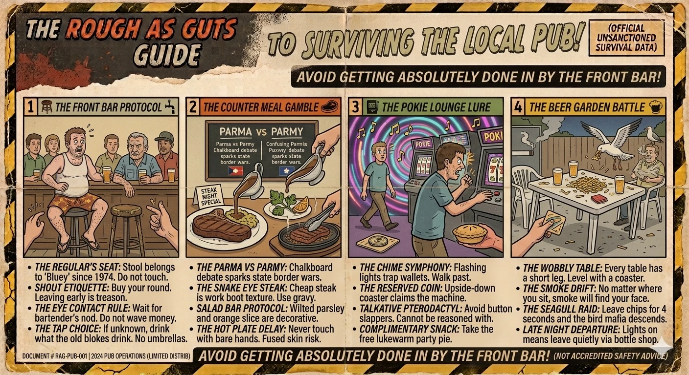

Optimised web copy shown. Exact original retained for provenance.
THE ROUGH AS GUTS GUIDE TO SURVIVING THE LOCAL PUB!
AVOID GETTING ABSOLUTELY DONE IN BY THE FRONT BAR!
1 THE FRONT BAR PROTOCOL
THE REGULAR’S SEAT: Stool belongs to ‘Bluey’ since 1974. Do not touch.
SHOUT ETIQUETTE: Buy your round. Leaving early is treason.
THE EYE CONTACT RULE: Wait for bartender’s nod. Do not wave money.
THE TAP CHOICE: If unknown, drink what the old blokes drink. No umbrellas.
Scene: A worried, sweating man in singlet, shorts and thongs sits on a bar stool. Regulars holding beer watch him from behind the bar, including a stern older man. Hands in the foreground point towards him. Bar-stool and beer-tap icons flank the heading.
2 THE COUNTER MEAL GAMBLE
THE PARMA VS PARMY: Chalkboard debate sparks state border wars.
THE SNAKE EYE STEAK: Cheap steak is work boot texture. Use gravy.
SALAD BAR PROTOCOL: Wilted parsley and orange slice are decorative.
THE HOT PLATE DELAY: Never touch with bare hands. Fused skin risk.
In-image labels: PARMA vs PARMY / Parma vs Parmy Chalkboard debate sparks state border wars. / Confusing Parmis [unclear] debate sparks slate berder wars. / STEAK NISHT SPECIAL
Scene: A chalkboard compares PARMA and PARMY above two state-flag-like symbols. In front, hands pour gravy over a steak-and-mash plate and over a sizzling hot-plate steak held with tongs. Wilted parsley and a citrus wedge sit on a separate small plate. A steak icon appears in the heading.
3 THE POKIE LOUNGE LURE
THE CHIME SYMPHONY: Flashing lights trap wallets. Walk past.
THE RESERVED COIN: Upside-down coaster claims the machine.
TALKATIVE PTERODACTYL: Avoid button slappers. Cannot be reasoned with.
COMPLIMENTARY SNACK: Take the free lukewarm party pie.
In-image labels: POKIE / POKI
Scene: A shocked man approaches a row of glowing poker machines through a hypnotic neon rainbow spiral with floating musical notes. A second man reaches eagerly for the machine controls. A foreground hand offers a party pie, and a coaster lies on the floor.
4 THE BEER GARDEN BATTLE
THE WOBBLY TABLE: Every table has a short leg. Level with a coaster.
THE SMOKE DRIFT: No matter where you sit, smoke will find your face.
THE SEAGULL RAID: Leave chips for 4 seconds and the bird mafia descends.
LATE NIGHT DEPARTURE: Lights on means leave quietly via bottle shop.
Scene: Outdoor plastic table and chairs in a fenced beer garden. Beer glasses and a pile of chips cover the table, while large seagulls swoop down. A seated man reacts with food at his mouth. Smoke curls in from the left and a foreground hand holds a coaster. Beer-mug icon in the heading.
Source footer
(OFFICIAL UNSANCTIONED SURVIVAL DATA)
DOCUMENT # RAG-PUB-001 | 2024 PUB OPERATIONS (LIMITED DISTRIB)
AVOID GETTING ABSOLUTELY DONE IN BY THE FRONT BAR!
(NOT ACCREDITED SAFETY ADVICE)
Source defects and unclear lettering
- Small chalkboard text in panel 2 contains generated nonsense and misspellings, including 'slate berder wars'; one word is unreadable.
- The small table sign reads 'STEAK NISHT SPECIAL', rather than the expected 'NIGHT'.
- Some poker-machine signage is malformed.
Image brief ingredients
Layout: four_strip
- The four distinct pub situations are front bar etiquette, counter meals, poker-machine temptation and beer-garden nuisance.
- Preserve the source humour and visual targets: newcomer taking a regular’s stool, boot-like steak/gravy, hypnotic pokies and seagulls stealing chips.
- Keep required lettering separate from generated illustration in a remake to prevent the source’s garbled sign text recurring.
- Recorded as humour; footer explicitly says this is not accredited safety advice.
The JSON download contains the full source record and a separate draft image prompt for each scene.
35Sulphuric acid spills: portrait version
Chemicals and exposure+
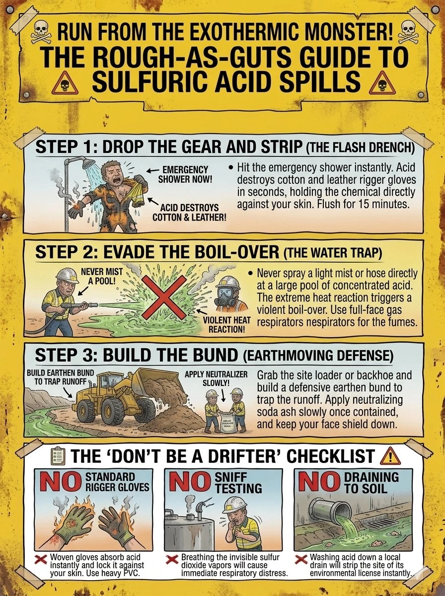

Optimised web copy shown. Exact original retained for provenance.
RUN FROM THE EXOTHERMIC MONSTER! THE ROUGH-AS-GUTS GUIDE TO SULFURIC ACID SPILLS
STEP 1 DROP THE GEAR AND STRIP (THE FLASH DRENCH)
Hit the emergency shower instantly. Acid destroys cotton and leather rigger gloves in seconds, holding the chemical directly against your skin. Flush for 15 minutes.
In-image labels: EMERGENCY SHOWER NOW! / ACID DESTROYS COTTON & LEATHER!
Scene: A distressed worker stands under a running emergency shower, pulling open or stripping off a torn, smoking orange work shirt. Grey gloves and holes in the clothing emphasise damage. Arrows point to the shower and damaged clothing.
STEP 2 EVADE THE BOIL-OVER (THE WATER TRAP)
Never spray a light mist or hose directly at a large pool of concentrated acid. The extreme heat reaction triggers a violent boil-over. Use full-face gas respirators nespirators for the fumes.
In-image labels: NEVER MIST A POOL! / VIOLENT HEAT REACTION!
Scene: A worker sprays a hose towards a green acid pool, which erupts in a large splash covered by a red X. To the right, a separate worker’s head wears a full-face respirator and hard hat.
STEP 3 BUILD THE BUND (EARTHMOVING DEFENSE)
Grab the site loader or backhoe and build a defensive earthen bund to trap the runoff. Apply neutralizing soda ash slowly once contained, and keep your face shield down.
In-image labels: BUILD EARTHEN BUND TO TRAP RUNOFF / APPLY NEUTRALIZER SLOWLY! / NEUTRALIZING [unclear]
Scene: A large front-end loader dumps soil to form an earthen barrier along green liquid runoff. Two small high-vis workers stand beside a sack of neutraliser, one reaching towards it. Label arrows indicate the bund and the neutraliser application.
THE ‘DON’T BE A DRIFTER’ CHECKLIST
NO STANDARD RIGGER GLOVES
Woven gloves absorb acid instantly and lock it against your skin. Use heavy PVC.
Scene: Close-up of a pair of damaged work gloves with holes, orange flames and rising smoke.
NO SNIFF TESTING
Breathing the invisible sulfur dioxide vapors will cause immediate respiratory distress.
Scene: A worker coughs with both hands over his mouth next to a steaming industrial tank and a small smoking fitting.
NO DRAINING TO SOIL
Washing acid down a local drain will strip the site of its environmental license instantly.
Scene: Green industrial liquid pours from a round pipe into an open drainage channel beside a grated drain and contaminated soil.
Source defects and unclear lettering
- Step 2 prints the duplicated/malformed phrase 'respirators nespirators'.
- Text combines 'sulfuric', 'neutralizing', 'defense', 'vapors' and 'license' with an Australian setting.
- The small neutraliser sack label is not fully legible.
- There is no actual reference source or qualifying disclaimer on this slide.
Image brief ingredients
Layout: steps_checklist
- Retain the distinct visual sequence: emergency drench, red-X hose/pool boil-over, loader-built earthen bund.
- The source presents explicit chemical-response and PPE instructions. These are transcribed claims, not independently verified guidance.
- Before publishing a revised safety image, have the acid chemistry, PPE, spill classification and site response requirements checked by an appropriate specialist.
The JSON download contains the full source record and a separate draft image prompt for each scene.
36Tyre pressure and sand recovery
Vehicles and travel+
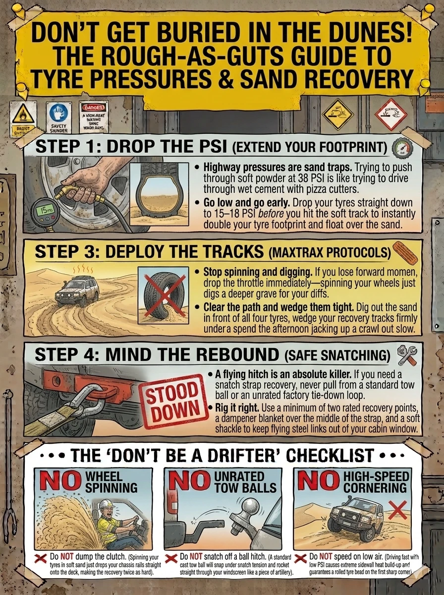

Optimised web copy shown. Exact original retained for provenance.
DON’T GET BURIED IN THE DUNES! THE ROUGH-AS-GUTS GUIDE TO TYRE PRESSURES & SAND RECOVERY
STEP 1 DROP THE PSI (EXTEND YOUR FOOTPRINT)
Highway pressures are sand traps. Trying to push through soft powder at 38 PSI is like trying to drive through wet cement with pizza cutters.
Go low and go early. Drop your tyres straight down to 15–18 PSI before you hit the soft track to instantly double your tyre footprint and float over the sand.
Scene: A hand holds a brass air-deflation tool against a vehicle tyre valve. A digital pressure gauge shows approximately 15. A separate inset shows a tyre’s widened footprint on sand. Pressure-gauge icon in the heading.
STEP 3 DEPLOY THE TRACKS (MAXTRAX PROTOCOLS)
Stop spinning and digging. If you lose forward momen, drop the throttle immediately. Spinning your wheels just digs a deeper grave for your diffs.
Clear the path and wedge them tight. Dig out the sand in front of all four tyres, wedge your recovery tracks firmly under a spend the afternoon jacking up a crawl out slow.
Scene: An off-road four-wheel-drive sits on deeply rutted sand tracks with heat lines above it. An inset tyre digging into sand is crossed out in red. An orange recovery-board icon appears next to the heading.
STEP 4 MIND THE REBOUND (SAFE SNATCHING)
A flying hitch is an absolute killer. If you need a snatch strap recovery, never pull from a standard tow ball or an unrated factory tie-down loop.
Rig it right. Use a minimum of two rated recovery points, a dampener blanket over the middle of the strap, and a soft shackle to keep flying steel links out of your cabin window.
In-image labels: STOOD DOWN
Scene: Close-up of the rear of a vehicle with a tow strap or rope clipped through a large metal loop/shackle. A tilted red 'STOOD DOWN' stamp covers much of the scene. Spanner/hammer icons accompany the heading.
THE ‘DON’T BE A DRIFTER’ CHECKLIST
NO WHEEL SPINNING
Do NOT dump the clutch. (Spinning your tyres in soft sand just drops your chassis rails straight onto the deck, making the recovery twice as hard).
Scene: A driver in high-vis and hard hat sits at a vehicle’s wheel while a huge fountain of sand sprays upward beside him.
NO UNRATED TOW BALLS
Do NOT snatch off a ball hitch. (A standard cast tow ball will snap under snatch tension and rocket straight through your windscreen like a piece of artillery).
Scene: A shiny tow ball breaks away from a vehicle hitch, with a loose part flying through the air beside a taut recovery strap.
NO HIGH-SPEED CORNERING
Do NOT speed on low air. (Driving fast with low PSI causes extreme sidewall heat build-up and guarantees a rolled tyre bead on the first sharp corner).
Scene: A four-wheel-drive leans while turning across sand, with a red X beside it.
Source defects and unclear lettering
- The step sequence skips STEP 2 and prints STEP 1, STEP 3, STEP 4.
- Step 3 contains visibly corrupted text: 'forward momen' and 'under a spend the afternoon jacking up a crawl out slow'.
- Small background industrial signs contain unreadable generated text; do not treat them as reliable labels.
- The source provides one fixed tyre-pressure range and other recovery instructions without context or supporting reference.
Image brief ingredients
Layout: steps_checklist
- Preserve the deflation close-up, sand-rut/traction-board theme and tow-hitch rebound hazard as separate scenes.
- Source text is retained exactly where legible, including broken grammar and skipped numbering.
- Vehicle-specific tyre and recovery safety claims are unverified source content; do not silently turn them into endorsed universal instructions.
The JSON download contains the full source record and a separate draft image prompt for each scene.
37Mine-site snake bites
Emergency response and health+
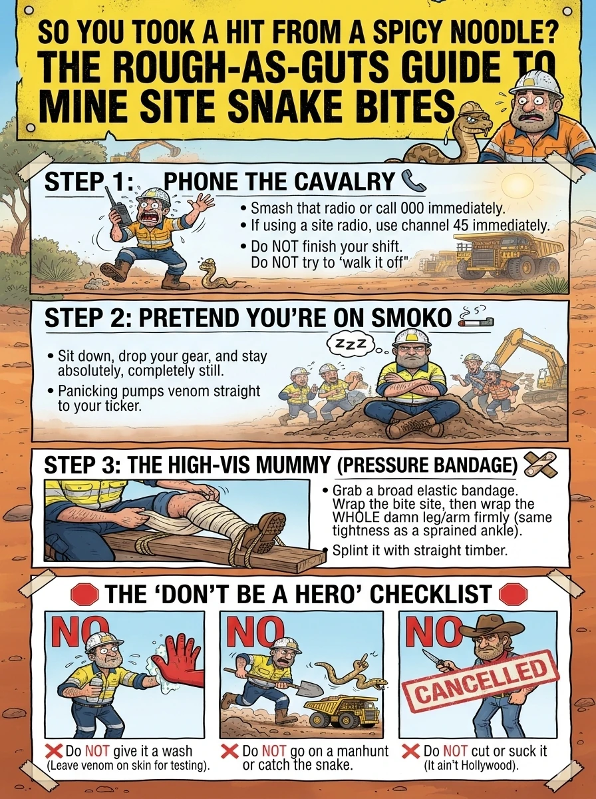

Optimised web copy shown. Exact original retained for provenance.
SO YOU TOOK A HIT FROM A SPICY NOODLE? THE ROUGH-AS-GUTS GUIDE TO MINE SITE SNAKE BITES
STEP 1 PHONE THE CAVALRY
Smash that radio or call 000 immediately.
If using a site radio, use channel 45 immediately.
Do NOT finish your shift. Do NOT try to ‘walk it off’
Scene: A panicking miner holds a handheld radio, raises his free hand and lifts one leg while a small snake sits beside his boot. A large mine haul truck and small equipment appear behind him. Phone icon beside heading.
STEP 2 PRETEND YOU’RE ON SMOKO
Sit down, drop your gear, and stay absolutely, completely still.
Panicking pumps venom straight to your ticker.
ZzZ
Scene: A stern miner sits cross-legged on a mound of dirt with his arms folded and eyes forward, with a sleep-symbol thought bubble. Several smaller miners run or gesticulate behind him, and an excavator stands at right. A smoking cigarette is a heading icon.
STEP 3 THE HIGH-VIS MUMMY (PRESSURE BANDAGE)
Grab a broad elastic bandage. Wrap the bite site, then wrap the WHOLE damn leg/arm firmly (same tightness as a sprained ankle).
Splint it with straight timber.
Scene: Close-up of a seated worker’s leg wrapped from lower leg towards the knee in a broad pale bandage. A straight timber plank lies under or beside the leg and is tied on as a splint. Crossed bandage icons beside heading.
THE ‘DON’T BE A HERO’ CHECKLIST
NO
Do NOT give it a wash
(Leave venom on skin for testing).
Scene: A worker holding a drink or container reaches towards a large red stop-hand symbol with water and suds.
NO
Do NOT go on a manhunt or catch the snake.
Scene: A miner runs with a shovel towards a leaping snake, with a mine dump truck behind them.
NO
Do NOT cut or suck it
(it ain’t Hollywood).
In-image labels: CANCELLED
Scene: A rugged cowboy-like man in a broad-brimmed brown hat holds a knife. A large red CANCELLED stamp crosses his body.
Source defects and unclear lettering
- Channel 45 appears as an absolute instruction without identifying a particular site or its radio plan.
- The caption 'Panicking pumps venom straight to your ticker' is a colloquial medical claim.
- The checklist image for washing is somewhat ambiguous.
Image brief ingredients
Layout: steps_checklist
- The snake-as-'spicy noodle' title, radio call, motionless smoko pose and mummy-like pressure bandage form the main visual sequence.
- Keep 'don’t wash', 'don’t chase/catch' and 'don’t cut/suck' as three distinct source checklist items.
- Snake-bite first aid and site-radio claims are unverified source text; specialist review is needed before a new safety publication adopts them.
The JSON download contains the full source record and a separate draft image prompt for each scene.
38Hot work and fire safety
Tools and physical work+
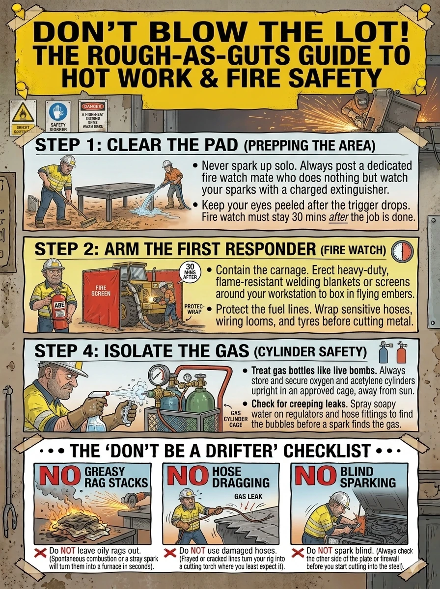

Optimised web copy shown. Exact original retained for provenance.
DON’T BLOW THE LOT! THE ROUGH-AS-GUTS GUIDE TO HOT WORK & FIRE SAFETY
STEP 1 CLEAR THE PAD (PREPPING THE AREA)
Never spark up solo. Always post a dedicated fire watch mate who does nothing but watch your sparks with a charged extinguisher.
Keep your eyes peeled after the trigger drops. Fire watch must stay 30 mins after the job is done.
Scene: One miner sweeps loose dirt or debris away from a metal workbench while another washes the ground with a hose. Both wear hard hats. A fuel can stands behind the sweeping worker.
STEP 2 ARM THE FIRST RESPONDER (FIRE WATCH)
Contain the carnage. Erect heavy-duty, flame-resistant welding blankets or screens around your workstation to box in flying embers.
Protect the fuel lines. Wrap sensitive hoses, wiring looms, and tyres before cutting metal.
In-image labels: ABE / FIRE SCREEN / 30 MINS AFTER / PROTEC- WRAP
Scene: At left a stern miner holds a red extinguisher marked ABE. At centre a red FIRE SCREEN stands beside a large vehicle tyre. At right another miner works near a protected hose or cable on the vehicle. A small '30 MINS AFTER' bubble/label and a protective-wrap arrow accompany the scene. Clock icon next to heading.
STEP 4 ISOLATE THE GAS (CYLINDER SAFETY)
Treat gas bottles like live bombs. Always store and secure oxygen and acetylene cylinders upright in an approved cage, away from sun.
Check for creeping leaks. Spray soapy water on regulators and hose fittings to find the bubbles before a spark finds the gas.
In-image labels: GAS CYLINDER CAGE
Scene: Close-up of a miner spraying a soapy solution from a trigger bottle onto regulators and fittings connected to upright blue and green cylinders inside a mesh cage. Bubbles form at a fitting. Two gas-cylinder icons appear beside the heading.
THE ‘DON’T BE A DRIFTER’ CHECKLIST
NO GREASY RAG STACKS
Do NOT leave oily rags out.
(Spontaneous combustion or a stray spark will turn them into a furnace in seconds).
Scene: A pile of oily rags burns on the floor as an angle grinder on a nearby workbench throws sparks toward it.
NO HOSE DRAGGING
Do NOT use damaged hoses.
(Frayed or cracked lines turn your rig into a cutting torch where you least expect it).
In-image labels: GAS LEAK
Scene: A worker pulls a long hose over a jagged metal edge; red leak marks and a GAS LEAK label show damage at the contact point.
NO BLIND SPARKING
Do NOT spark blind. (Always check the other side of the plate or firewall before you start cutting into the steel).
Scene: A miner grinds or cuts inside an open vehicle engine bay, with sparks close to the unseen underside or firewall.
Source defects and unclear lettering
- The step sequence skips STEP 3 and prints STEP 1, STEP 2, STEP 4.
- Small background warning signs and some illustration labels contain malformed generated wording.
- The fire-watch duration appears as a universal instruction without a site-specific reference.
Image brief ingredients
Layout: steps_checklist
- Retain the cleaning/preparation scene, screened hot-work/fire-watch scene and gas-cylinder leak-check scene.
- The checklist separately depicts combustible rags, a damaged hose and cutting into a hidden area.
- All hot-work, cylinder-storage, PPE and fire-watch statements are unverified source claims.
The JSON download contains the full source record and a separate draft image prompt for each scene.
39Office survival
Outdoors and everyday humour+
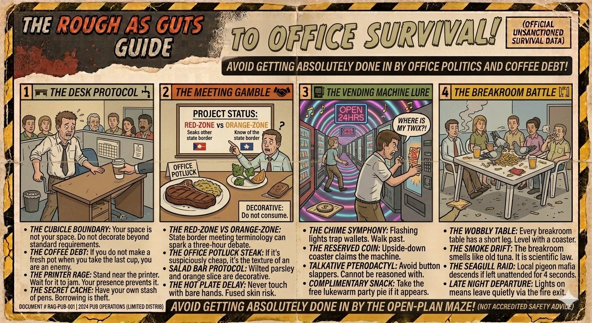

Optimised web copy shown. Exact original retained for provenance.
THE ROUGH AS GUTS GUIDE TO OFFICE SURVIVAL!
AVOID GETTING ABSOLUTELY DONE IN BY OFFICE POLITICS AND COFFE DEBT!
1 THE DESK PROTOCOL
THE CUBICLE BOUNDARY: Your space is not your space. Do not decorate beyond standard requirements.
THE COFFEE DEBT: If you do not make a fresh pot when you take the last cup, you are an enemy.
THE PRINTER RAGE: Stand near the printer. Wait for it to jam. Your presence prevents it.
THE SECRET CACHE: Have your own stash of pens. Borrowing is theft.
Scene: A sweating office worker in a rumpled shirt and loose tie stands beside a cubicle desk. Colleagues watch from beyond the divider, and a hand from the right offers him a takeaway coffee. Computer, desk calendar, paper note and wastebasket are visible.
2 THE MEETING GAMBLE
THE RED-ZONE VS ORANGE-ZONE: State border meeting terminology can spark a three-hour debate.
THE OFFICE POTLUCK STEAK: If it’s suspiciously cheap, it’s the texture of an
SALAD BAR PROTOCOL: Wilted parsley and orange slice are decorative.
THE HOT PLATE DELAY: Never touch with bare hands. Fused skin risk.
In-image labels: PROJECT STATUS: / RED-ZONE vs ORANGE-ZONE / Seaks other state border / Know of the state border / OFFICE POTLUCK / DECORATIVE: Do not consume.
Scene: An office presenter points to a project-status board dividing RED-ZONE and ORANGE-ZONE, with two state-flag-like symbols. In the foreground is a steak-and-mash meal, wilted parsley/citrus on a plate and a rectangular brown food item on a small plate. A handshake icon accompanies the heading.
3 THE VENDING MACHINE LURE
THE CHIME SYMPHONY: Flashing lights trap wallets. Walk past.
THE RESERVED COIN: Upside-down coaster claims the machine.
TALKATIVE PTERODACTYL: Avoid button slappers. Cannot be reasoned with.
COMPLIMENTARY SNACK: Take the free lukewarm party pie if it appears.
WHERE IS MY TWIX?!
In-image labels: OPEN 24HRS / [unclear]
Scene: A frustrated office worker reaches towards a vending machine’s controls while a colleague approaches through a neon rainbow vortex with floating music notes. An upside-down coaster lies on the floor. The machines and hypnotic spiral closely resemble the pub’s pokie-lounge scene.
4 THE BREAKROOM BATTLE
THE WOBBLY TABLE: Every breakroom table has a short leg. Level with a coaster.
THE SMOKE DRIFT: The breakroom smells like old tuna. It is scientific law.
THE SEAGULL RAID: Local pigeon mafia descends if left unattended for 4 seconds.
LATE NIGHT DEPARTURE: Lights on means leave quietly via the fire exit.
Scene: Several office workers sit or stand around a crowded breakroom table. Beer-like drink glasses, chips, cups or bowls and a red packet cover the table. The figures look uneasy, and curling vapour/smell lines rise beside them. Food scraps litter the floor. The image retains much of the pub beer-garden arrangement.
Source footer
(OFFICIAL UNSANCTIONED SURVIVAL DATA)
DOCUMENT # RAG-PUB-001 | 2024 PUB OPERATIONS (LIMITED DISTRIB)
AVOID GETTING ABSOLUTELY DONE IN BY THE OPEN-PLAN MAZE!
(NOT ACCREDITED SAFETY ADVICE)
Source defects and unclear lettering
- Top banner misspells 'COFFEE' as 'COFFE'.
- Panel 2's 'THE OFFICE POTLUCK STEAK' sentence ends abruptly at 'an'.
- Panel 2's status-board fine print is nonsensical ('Seaks other state border').
- The footer still identifies RAG-PUB-001 and PUB OPERATIONS, inherited from the pub poster.
- Several captions retain pub concepts (upside-down coaster reserving a machine, party pie, salad, hot plate, seagull raid).
- Illustrations and wording do not always agree, including a pigeon caption without an obvious pigeon and pub-like glasses in the office breakroom.
Image brief ingredients
Layout: four_strip
- This is an office variation built on the same four-column composition as the pub poster.
- Preserve source observations separately from proposed improvements: desk/cubicle etiquette, meeting-zone jargon, vending-machine craving and shared breakroom problems.
- For a coherent future generation, decide deliberately which inherited pub jokes to keep and which to replace; do not treat them as factual office details.
- Footer labels the poster humour and not accredited safety advice.
The JSON download contains the full source record and a separate draft image prompt for each scene.
40Remote desert survival
Vehicles and travel+
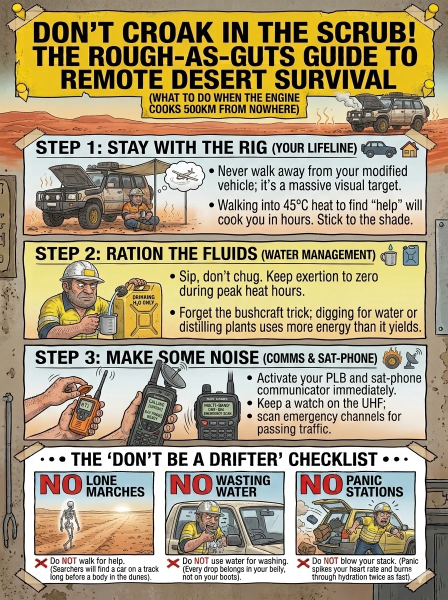

Optimised web copy shown. Exact original retained for provenance.
DON’T CROAK IN THE SCRUB! THE ROUGH-AS-GUTS GUIDE TO REMOTE DESERT SURVIVAL
(WHAT TO DO WHEN THE ENGINE COOKS 500KM FROM NOWHERE)
STEP 1 STAY WITH THE RIG (YOUR LIFELINE)
Never walk away from your modified vehicle; it’s a massive visual target.
Walking into 45°C heat to find “help” will cook you in hours. Stick to the shade.
Scene: A four-wheel-drive with bonnet up, bullbar, spare gear and a tarp awning stands on the sand. A miner sits cross-legged in its shade. Heat lines rise around the vehicle. A thought bubble contains a small aeroplane. Car and house icons beside heading.
STEP 2 RATION THE FLUIDS (WATER MANAGEMENT)
Sip, don’t chug. Keep exertion to zero during peak heat hours.
Forget the bushcraft trick; digging for water or distilling plants uses more energy than it yields.
In-image labels: DRINKING H₂O ONLY
Scene: A stern miner pours water from a yellow jerry can into a metal mug. The can is labelled DRINKING H₂O ONLY. A mug, drop and jerry-can icon accompany the heading.
STEP 3 MAKE SOME NOISE (COMMS & SAT-PHONE)
Activate your PLB and sat-phone communicator immediately.
Keep a watch on the UHF;
scan emergency channels for passing traffic.
In-image labels: CALLING / READY / EMERGENCY SCAN
Scene: Three close-up communication devices: a hand opens or operates an orange beacon, a second hand holds a large satellite phone with a dish-like antenna, and a dark handheld radio stands upright at right. Their displays contain a mixture of readable status words and garbled text. A burning tyre and satellite dish appear as heading icons.
THE ‘DON’T BE A DRIFTER’ CHECKLIST
NO LONE MARCHES
Do NOT walk for help.
(Searchers will find a car on a track long before a body in the dunes).
Scene: A lone skeleton walks away across a broad empty sandy desert, leaving footprints.
NO WASTING WATER
Do NOT use water for washing.
(Every drop belongs in your belly, not on your boots).
Scene: A miner at the open window of a four-wheel-drive holds his hand near his mouth while water or white suds splash down over the window/door area.
NO PANIC STATIONS
Do NOT blow your stack.
(Panic spikes your heart rate and burns through hydration twice as fast).
Scene: A panicked miner runs or stumbles beside the raised rear hatch of a four-wheel-drive, flinging gear into the air.
Source defects and unclear lettering
- The word 'modified' in the vehicle instruction is unusually specific but is retained as printed.
- Communication-device screens contain garbled generated labels.
- 'Keep a watch on the UHF;' and 'scan emergency channels for passing traffic.' are shown as separate bullets despite forming one sentence.
- The water-wasting illustration is ambiguous and does not clearly depict washing boots.
- Survival and hydration claims, including a specific 45°C scenario and 'twice as fast', are unsupported within the slide.
Image brief ingredients
Layout: steps_checklist
- Retain the core remote-breakdown setting and specific props: raised bonnet, shade awning, yellow drinking-water can, PLB, satellite phone and UHF.
- Preserve the three separate forbidden behaviours: walking away, washing with drinking water, and panic.
- All survival, heat and water-management instructions are unverified source content; validate them before adopting them in a new instructional image.
The JSON download contains the full source record and a separate draft image prompt for each scene.
41Heights and ladders
Tools and physical work+
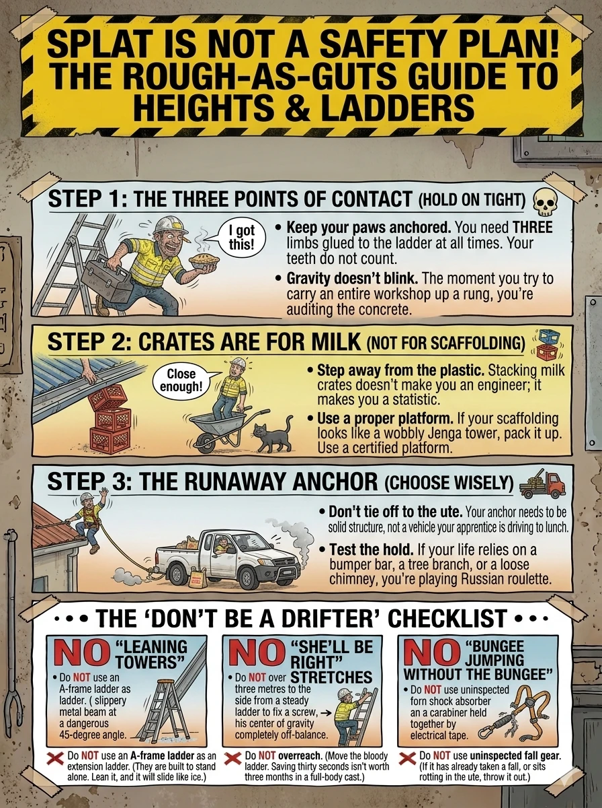

Optimised web copy shown. Exact original retained for provenance.
SPLAT IS NOT A SAFETY PLAN! THE ROUGH-AS-GUTS GUIDE TO HEIGHTS & LADDERS
STEP 1 THE THREE POINTS OF CONTACT (HOLD ON TIGHT)
Keep your paws anchored. You need THREE limbs glued to the ladder at all times. Your teeth do not count.
Gravity doesn’t blink. The moment you try to carry an entire workshop up a rung, you’re auditing the concrete.
I got this!
Scene: A grinning miner stands near an open A-frame ladder, carrying a heavy toolbox in one hand and a pie in the other. His body leans forward with movement marks. A skull icon appears beside the heading.
STEP 2 CRATES ARE FOR MILK (NOT FOR SCAFFOLDING)
Step away from the plastic. Stacking milk crates doesn’t make you an engineer; it makes you a statistic.
Use a proper platform. If your scaffolding looks like a wobbly Jenga tower, pack it up. Use a certified platform.
Close enough!
Scene: At left, three red plastic milk crates are precariously stacked under a metal roof or beam with a hand on its edge. At centre, a miner balances standing in a wheelbarrow while a black cat walks beside it. Two small milk-crate icons accompany the heading.
STEP 3 THE RUNAWAY ANCHOR (CHOOSE WISELY)
Don’t tie off to the ute. Your anchor needs to be solid structure, not a vehicle your apprentice is driving to lunch.
Test the hold. If your life relies on a bumper bar, a tree branch, or a loose chimney, you’re playing Russian roulette.
Scene: A miner is falling or sliding off the edge of a roof while a rope from his waist runs to the rear of a white ute. The ute drives away in a cloud of exhaust/dust with another worker at its wheel. A small loaded-truck icon appears in the heading.
THE ‘DON’T BE A DRIFTER’ CHECKLIST
NO “LEANING TOWERS”
Do NOT use an A-frame ladder as ladder. ( slippery metal beam at a dangerous 45-degree angle.
Do NOT use an A-frame ladder as an extension ladder. (They are built to stand alone. Lean it, and it will slide like ice.)
Scene: An open A-frame ladder stands below/against a long diagonal silver metal beam. The internal text describes a slippery beam; the lower caption describes misuse as an extension ladder.
NO “SHE’LL BE RIGHT” STRETCHES
Do NOT over three metres to the side from a steady ladder to fix a screw, → his center of gravity completely off-balance.
Do NOT overreach. (Move the bloody ladder. Saving thirty seconds isn’t worth three months in a full-body cast.)
Scene: A high-vis worker high on an angled ladder stretches his torso and arms far to the side. An arrow points towards him.
NO “BUNGEE JUMPING WITHOUT THE BUNGEE”
Do NOT use uninspected forn shock absorber an a carabiner held together by electrical tape.
Do NOT use uninspected fall gear. (If it has already taken a fall, or sits rotting in the ute, throw it out.)
Scene: A yellow/orange fall-arrest lanyard with hooks has a frayed black energy-absorber section, exposed ragged fibres and improvised binding.
Source defects and unclear lettering
- Checklist item 1 has incomplete internal wording ('as ladder. ( slippery...') and an unclosed parenthesis.
- Checklist item 2 has malformed wording ('Do NOT over three metres...') and combines its title with the word 'STRETCHES'.
- Checklist item 3 prints 'forn shock absorber an a carabiner', which is malformed.
- The checklist’s internal descriptions and the captions beneath them partly duplicate one another but are not identical.
- The step-2 wheelbarrow illustration does not actually show the certified platform described in the positive instruction.
Image brief ingredients
Layout: steps_checklist
- Keep the contrast between toolbox/pie overloading, milk-crate/wheelbarrow improvisation and a moving ute used as an anchor.
- Checklist contains two separate source text layers per item: internal description and bottom caption; retain both in the catalogue rather than merging them.
- All working-at-height, anchorage and fall-equipment guidance is unverified source content.
The JSON download contains the full source record and a separate draft image prompt for each scene.
42High-pressure injection injury
Emergency response and health+
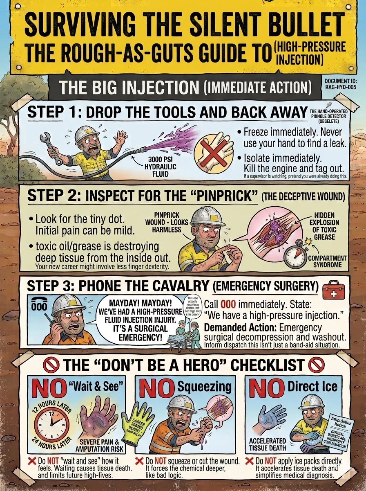

Optimised web copy shown. Exact original retained for provenance.
SURVIVING THE SILENT BULLET THE ROUGH-AS-GUTS GUIDE TO (HIGH-PRESSURE INJECTION)
THE BIG INJECTION (IMMEDIATE ACTION)
STEP 1 DROP THE TOOLS AND BACK AWAY
Freeze immediately. Never use your hand to find a leak.
Isolate immediately. Kill the engine and tag out.
If a supervisor is watching, pretend you were already doing this.
In-image labels: THE HAND-OPERATED PINHOLE DETECTOR (OBSELETE) / 3000 PSI HYDRAULIC FLUID
Scene: A startled miner drops or holds a spanner while a black hydraulic hose sprays purple fluid from a leak. A separate gloved hand icon is crossed out with a large red X.
STEP 2 INSPECT FOR THE “PINPRICK” (THE DECEPTIVE WOUND)
Look for the tiny dot. Initial pain can be mild.
toxic oil/grease is destroying deep tissue from the inside out.
Your new career might involve less finger dexterity.
In-image labels: PINPRICK WOUND - LOOKS HARMLESS / HIDDEN EXPLOSION OF TOXIC GREASE / COMPARTMENT SYNDROME
Scene: A miner studies a tiny mark on one finger. An enlarged circular tissue inset shows purple material exploding beneath the skin. A stopwatch icon beside it emphasises urgency.
STEP 3 PHONE THE CAVALRY (EMERGENCY SURGERY)
Call 000 immediately. State: “We have a high-pressure injection.”
Demanded Action: Emergency surgical decompression and washout.
Inform dispatch this isn’t just a band-aid situation.
MAYDAY! MAYDAY! WE’VE HAD A HIGH-PRESSURE FLUID INJECTION INJURY. IT’S A SURGICAL EMERGENCY!
[unclear: small speech bubble above the medical team contains garbled text]
In-image labels: 000
Scene: A worried orange-shirted miner uses a handheld radio or phone. His large speech balloon fills the centre of the panel. Two small medical workers in green scrubs push a patient on a stretcher at the right. A red medical case icon accompanies the heading.
THE “DON’T BE A HERO” CHECKLIST
NO “Wait & See”
Do NOT “wait and see” how it feels. Waiting causes tissue death and limits future high-fives.
In-image labels: 12 HOURS LATER / 24 HOURS LATER / SEVERE PAIN & AMPUTATION RISK
Scene: A large clock is paired with a swollen purple injured hand; two time labels arc around the clock.
NO Squeezing
Do NOT squeeze or cut the wound. It forces the chemical deeper, like bad logic.
Scene: A grimacing miner squeezes his injured finger with the other hand while purple fluid drips from it. A circular inset shows fluid beneath the skin. A large glove at the left has garbled decorative lettering.
NO Direct Ice
Do NOT apply ice packs directly. It accelerates tissue death and simplifies medical diagnosis.
In-image labels: ACCELERATED TISSUE DEATH / Ampustion Hotice / [unclear: remaining document text is garbled]
Scene: A miner presses a pale blue cold pack against his other forearm or wrist. An enlarged blue-purple hand appears at left. A small crooked notice with malformed text is held or displayed at the right.
Source footer
DOCUMENT ID: RAG-HYD-005
Source defects and unclear lettering
- The parenthetical subject '(HIGH-PRESSURE INJECTION)' sits at the far right of the 'THE ROUGH-AS-GUTS GUIDE TO' line rather than below it.
- The label 'OBSELETE' is misspelled as printed.
- Step 2's second bullet starts with lowercase 'toxic'.
- Step 3 says 'Demanded Action', not 'Recommended Action'.
- The tiny medical-team speech bubble, glove lettering and mock notice are generated gibberish and cannot be fully transcribed reliably.
- The ice caption includes the troubling phrase 'simplifies medical diagnosis'; preserved as source rather than endorsed.
- Medical claims and a specific surgical intervention appear without reference or qualifying disclaimer.
Image brief ingredients
Layout: steps_checklist
- The key visual metaphor is a tiny external puncture concealing a large internal injury; preserve the contrast and the urgent communication scene.
- Keep purple hydraulic fluid visually separate from blood and make any regenerated labels editable rather than relying on the image model for fine text.
- The medical instructions and treatment claims are unverified source content and need clinical review before reuse.
The JSON download contains the full source record and a separate draft image prompt for each scene.
43Acid spill: mock procedure notice
Chemicals and exposure+
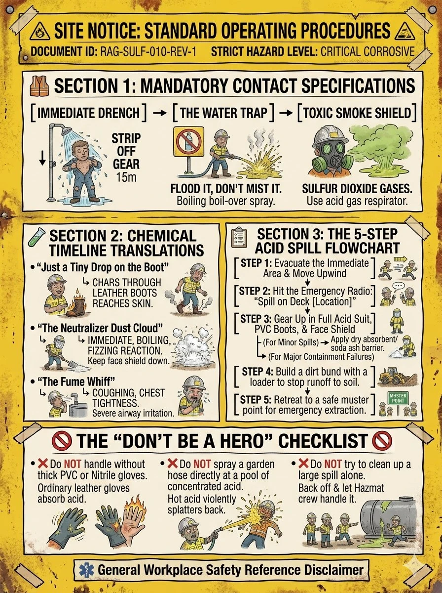

Optimised web copy shown. Exact original retained for provenance.
SITE NOTICE: STANDARD OPERATING PROCEDURES
DOCUMENT ID: RAG-SULF-010-REV-1 STRICT HAZARD LEVEL: CRITICAL CORROSIVE
SECTION 1 MANDATORY CONTACT SPECIFICATIONS
Scene: Three left-to-right illustrated instructions joined by black arrows.
[IMMEDIATE DRENCH]
STRIP OFF GEAR
15m
Scene: A distressed bare-chested miner with damaged trousers stands under a running emergency shower. A down arrow beside the shower points along the water flow.
[THE WATER TRAP]
FLOOD IT, DON’T MIST IT.
Boiling boil-over spray.
Scene: A miner directs a hose towards a yellow splashing pool. A nearby sign shows a crossed-out spray bottle.
[TOXIC SMOKE SHIELD]
SULFUR DIOXIDE GASES.
Use acid gas respirator.
Scene: A hard-hatted head wearing a large full-face respirator with green filters sits beside green gas rising from an acid pool.
SECTION 2 CHEMICAL TIMELINE TRANSLATIONS
Scene: Three vertically stacked colloquial phrases paired with damage or exposure illustrations.
“Just a Tiny Drop on the Boot”
CHARS THROUGH LEATHER BOOTS REACHES SKIN.
Scene: A smiling miner holds or points at a smoking, damaged leather work boot; beside him, a second miner lifts his foot while smoke rises from the boot.
“The Neutralizer Dust Cloud”
IMMEDIATE, BOILING, FIZZING REACTION.
Keep face shield down.
Scene: A high-vis worker uses a long-handled tool to apply white powder to a spill, which erupts in a large white fizzing splash. Bent arrows connect the phrase to the reaction description.
“The Fume Whiff”
COUGHING, CHEST TIGHTNESS.
Severe airway irritation.
Scene: A miner leans close to a steaming vessel or fitting; a second miner at the right coughs into his hand.
SECTION 3 THE 5-STEP ACID SPILL FLOWCHART
Scene: Five bracketed steps linked by downward arrows, with a small cartoon beside each step. Step 3 splits into a minor-spill branch and major-containment-failure continuation.
STEP 1
Evacuate the Immediate Area & Move Upwind
Scene: Two miners run away from a plume with an arrow showing direction.
STEP 2
Hit the Emergency Radio: “Spill on Deck [Location]”
Scene: Two small miners communicate by handheld radio beneath a speech bubble containing dots.
STEP 3
Gear Up in Full Acid Suit, PVC Boots, & Face Shield
(For Minor Spills) → Apply dry absorbent/soda ash barrier.
(For Major Containment Failures)
Scene: A worker wears a yellow chemical-protection suit and face shield. Below, a smaller protected worker kneels beside white absorbent material. The major-failure branch arrow continues towards step 4.
STEP 4
Build a dirt bund with a loader to stop runoff to soil.
Scene: A yellow front-end loader carries or pushes a mound of earth.
STEP 5
Retreat to a safe muster point for emergency extraction.
In-image labels: MUSTER POINT
Scene: A group of high-vis workers gathers at a green MUSTER POINT sign.
THE “DON’T BE A HERO” CHECKLIST
Do NOT handle without thick PVC or Nitrile gloves. Ordinary leather gloves absorb acid.
Scene: Three hands/gloves are shown: damaged dark work gloves and a bare or pale-gloved hand, with orange burn or flame effects and holes.
Do NOT spray a garden hose directly at a pool of concentrated acid. Hot acid violently splatters back.
Scene: A miner sprays a hose at acid; a large yellow splash bursts into another miner’s face and body.
Do NOT try to clean up a large spill alone. Back off & let Hazmat crew handle it.
Scene: Several miners stand at a distance and point towards a leaking horizontal industrial tank with green acid pooled beneath it.
Source footer
General Workplace Safety Reference Disclaimer
Source defects and unclear lettering
- The top strip says 'FLOOD IT, DON’T MIST IT' beside a hose-and-pool illustration, while the bottom checklist prohibits spraying a hose into a concentrated acid pool; the contexts are not clearly distinguished.
- 'Boiling boil-over spray' is awkward generated wording.
- The footer only displays the title 'General Workplace Safety Reference Disclaimer'; it provides no actual disclaimer terms.
- Several technical response instructions are presented as standard operating procedures without a source or site approval record.
- Subpanels in sections 1 and 2 have no printed numbers. Their reading_order fields are catalogue ordering only.
Image brief ingredients
Layout: mock_notice
- Keep this as a separate, denser SOP/flowchart treatment of acid response, distinct from slide 35’s three-step comedic guide.
- Retain all section nesting and the minor/major spill branch in structured source records; do not flatten it into a single linear list.
- The apparent contradiction between 'flood' and 'don’t hose the pool' must be resolved by a competent chemical-safety reviewer before generating a new instructional version.
- All chemical, PPE and emergency-response claims are unverified source text.
The JSON download contains the full source record and a separate draft image prompt for each scene.
44Confined spaces
Tools and physical work+
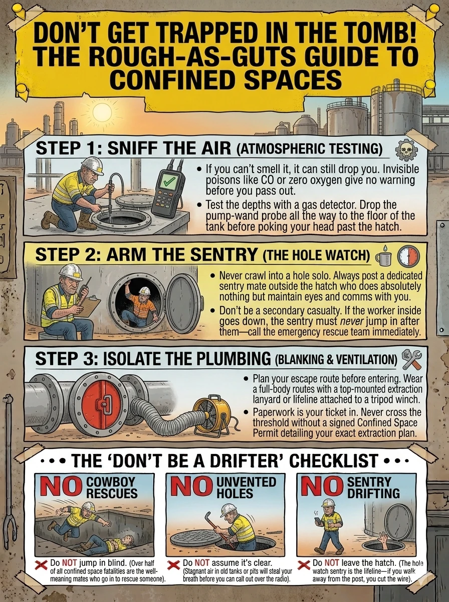

Optimised web copy shown. Exact original retained for provenance.
DON’T GET TRAPPED IN THE TOMB! THE ROUGH-AS-GUTS GUIDE TO CONFINED SPACES
STEP 1 SNIFF THE AIR (ATMOSPHERIC TESTING)
If you can’t smell it, it can still drop you. Invisible poisons like CO or zero oxygen give no warning before you pass out.
Test the depths with a gas detector. Drop the pump-wand probe all the way to the floor of the tank before poking your head past the hatch.
Scene: A worker kneels beside an open circular manhole and lowers a long flexible sampling probe through the opening. A large handheld gas detector with a green tick floats at right. A skull-in-gear icon appears by the heading.
STEP 2 ARM THE SENTRY (THE HOLE WATCH)
Never crawl into a hole solo. Always post a dedicated sentry mate outside the hatch who does absolutely nothing but maintain eyes and comms with you.
Don’t be a secondary casualty. If the worker inside goes down, the sentry must never jump in after them. Call the emergency rescue team immediately.
Scene: A seated high-vis sentry holds a radio and clipboard outside a large round side hatch. An orange-shirted worker is crouched inside the vessel. A mug/drop and clock are heading icons.
STEP 3 ISOLATE THE PLUMBING (BLANKING & VENTILATION)
Plan your escape route before entering. Wear a full-body routes with a top-mounted extraction lanyard or lifeline attached to a tripod winch.
Paperwork is your ticket in. Never cross the threshold without a signed Confined Space Permit detailing your exact extraction plan.
Scene: A large grey pipe has a round red blanking plate bolted across its open end. Corrugated flexible ventilation ducting leads from the pipe/vessel area to a portable yellow blower. Crossed tools accompany the heading.
THE ‘DON’T BE A DRIFTER’ CHECKLIST
NO COWBOY RESCUES
Do NOT jump in blind. (Over half of all confined space fatalities are the well-meaning mates who go in to rescue someone).
Scene: One worker dives head-first into a pit towards a second worker lying unconscious at the bottom.
NO UNVENTED HOLES
Do NOT assume it’s clear.
(Stagnant air in old tanks or pits will steal your breath before you can call out over the radio).
Scene: A miner stands partly inside an open manhole, holding a long tool or handle while its round cover lies beside him.
NO SENTRY DRIFTING
Do NOT leave the hatch. (The hole watch sentry is the lifeline. If you walk away from the post, you cut the wire).
Scene: A sentry walks away while holding a steaming drink and a snack. A trapped worker’s hand reaches out of the unattended open hatch behind him.
Source defects and unclear lettering
- Step 3 prints the malformed phrase 'Wear a full-body routes', likely generated text corruption; retained as printed.
- Step 3’s heading emphasises blanking/ventilation, while its written bullets emphasise extraction equipment and permits.
- 'Over half' is a specific fatality statistic without a source on the slide.
- Atmospheric-testing placement and rescue arrangements are simplified as universal instructions without site or task context.
Image brief ingredients
Layout: steps_checklist
- Preserve the three distinct positive scenes: remote gas sampling, dedicated outside sentry, and pipe blanking plus ventilation.
- Keep rescue attempt, unvented entry and absent sentry as separate negative illustrations.
- All confined-space entry, testing, PPE, isolation and rescue claims are unverified source content.
The JSON download contains the full source record and a separate draft image prompt for each scene.
45School holidays
Outdoors and everyday humour+
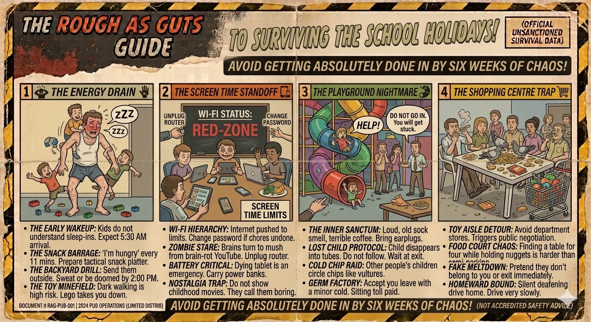

Optimised web copy shown. Exact original retained for provenance.
THE ROUGH AS GUTS GUIDE TO SURVIVING THE SCHOOL HOLIDAYS!
AVOID GETTING ABSOLUTELY DONE IN BY SIX WEEKS OF CHAOS!
1 THE ENERGY DRAIN
THE EARLY WAKEUP: Kids do not understand sleep-ins. Expect 5:30 AM arrival.
THE SNACK BARRAGE: ‘I’m hungry’ every 11 mins. Prepare tactical snack platter.
THE BACKYARD DRILL: Send them outside. Sweat or be doomed by 2:00 PM.
THE TOY MINEFIELD: Dark walking is high risk. Lego takes you down.
ZZZ
ZZZ
Scene: An exhausted red-faced father in singlet, shorts and bare feet stands with one child on his shoulders and two children pulling at his arms. Lego bricks, small toys, a soccer ball and snack crumbs are scattered across the floor. Two sleep-symbol bubbles hover by his head. Eye/head and raised-hand icons sit beside the heading.
2 THE SCREEN TIME STANDOFF
WI-FI HIERARCHY: Internet pushed to limits. Change password if chores undone.
ZOMBIE STARE: Brains turn to mush from brain-rot YouTube. Unplug router.
BATTERY CRITICAL: Dying tablet is an emergency. Carry power banks.
NOSTALGIA TRAP: Do not show childhood movies. They call them boring.
In-image labels: UNPLUG ROUTER / WI-FI STATUS: / RED-ZONE / CHANGE PASSWORD / SCREEN TIME LIMITS
Scene: Four children sit around a table using tablets, laptops and phones. The central child has wide zombie-like eyes. A large board behind them reads WI-FI STATUS: RED-ZONE. A hand at left reaches towards a router plug, while a hand at right gestures beneath CHANGE PASSWORD. A parsley-and-citrus plate remains on the table.
3 THE PLAYGROUND NIGHTMARE
THE INNER SANCTUM: Loud, old sock smell, terrible coffee. Bring earplugs.
LOST CHILD PROTOCOL: Child disappears into tubes. Do not follow. Wait at exit.
COLD CHIP RAID: Other people’s children circle chips like vultures.
GERM FACTORY: Accept you leave with a minor cold. Sitting toll paid.
HELP!
DO NOT GO IN. You will get stuck.
Scene: A multicoloured indoor tube-slide structure fills the panel. A distressed adult appears stuck inside a blue/green tube with a HELP! balloon, while a child emerges from the red lower tube. Watching adults stand at right, one warning against entering. A foreground hand reaches towards the slide. A table with chips or snacks and a drink occupies the bottom right.
4 THE SHOPPING CENTRE TRAP
TOY AISLE DETOUR: Avoid department stores. Triggers public negotiation.
FOOD COURT CHAOS: Finding a table for four while holding nuggets is harder than [partly obscured: semi-parking].
FAKE MELTDOWN: Pretend they don’t belong to you or exit immediately.
HOMEWARD BOUND: Silent deafening drive home. Drive very slowly.
Scene: A group of adults gathers around a table covered with cups/bowls, chips, nuggets and packets, with scraps scattered over the floor. A shopping trolley filled with groceries stands at the right. Several people look unhappy or overwhelmed, and smell/steam lines rise beside them. The composition closely repeats the office-breakroom/pub-table illustration; no obvious child meltdown is depicted.
Source footer
(OFFICIAL UNSANCTIONED SURVIVAL DATA)
DOCUMENT # RAG-PUB-001 | 2024 PUB OPERATIONS (LIMITED DISTRIB)
AVOID GETTING ABSOLUTELY DONE IN BY SIX WEEKS OF CHAOS!
(NOT ACCREDITED SAFETY ADVICE)
Source defects and unclear lettering
- Panel 4’s food-court sentence overlaps the following FAKE MELTDOWN bullet; its final phrase is partly obscured and cannot be confidently transcribed.
- Footer retains RAG-PUB-001 and 2024 PUB OPERATIONS from the pub template.
- Panel 2 retains the decorative parsley/citrus plate from earlier meal scenes.
- Panel 4 shows predominantly adults and repeats the previous pub/office table arrangement rather than clearly illustrating a family shopping scenario.
- 'Silent deafening drive home' and 'Sitting toll paid' are awkward source wording.
Image brief ingredients
Layout: four_strip
- Keep four distinct family-holiday themes: early waking/snacks/toys, devices/Wi-Fi, indoor playground and shopping/food court.
- The sleep bubbles, zombie tablet stare and trapped adult in a tube slide are concrete visual gags to preserve.
- Source observations and inherited visual mismatches are documented separately from any future idea improvements.
- Footer explicitly states this is not accredited safety advice; no independent parenting or safety validation has been performed.
The JSON download contains the full source record and a separate draft image prompt for each scene.
No matching slides. Try a broader word or choose all collections.
Original. Optimised. Traceable.
Compare the original embedded JPEG with its web derivative. The originals retain their exact supplied bytes, including embedded metadata. Web copies are compressed for browsing; they have not been retouched or presented as new source art.
Original files can be several megabytes. They load here only when you choose to compare.
Source records & rights
Darryl Gough supplied the concept and original draft artwork. Luke Nathan Hayes is developing the wider guides, editorial system and website. Original files, readable transcripts and new illustration prompts remain available together here.
Source rights and interim licence notice